← 回股市觀察
盤中觀察 每日盤中觀察
2026/11/19 12:31 即時快照 · 當日盤中成交金額前 50 檔（上市 35＋上櫃 15）· 公開資料整理
→ 看當日逐檔技術線型分析（全檔） 歷次逐檔分析
38,912.79
加權指數 -1,282.12 點（-3.19%）
這是盤中快照，不是收盤結果。資料時間 2026-11-19 12:31:10（TWSE MIS 即時行情，上市／上櫃皆 delay=0）。
13:30 收盤（含最後一盤集合競價）會再變動；量能是以「已過交易時間比例」推估（尾盤大量時會低估）；
技術面標籤是把盤中現價代入原本以收盤價設計的規則（日線歷史只到前一交易日 9/14）。
統計範圍：候選池＝20261118 與 20261117 收盤成交值前段（上市 250／上櫃 130）取聯集，共 325 檔；再以今日盤中累計成交金額排序取
上市前 35＋上櫃前 15。漲跌家數是候選池內的數字，不是全市場（即時全市場家數證交所沒有開放端點）。
本頁為公開資料的整理與觀察，不構成投資建議，不報牌、不預測、不下買賣決策。
時程紀錄（本日盤中分析）▾ 點擊展開▴ 點擊收合
| 階段 | 時間 |
|---|
| 任務開始 | 由排程自動觸發（週一～週五 12:30） |
| 分析腳本執行 | 12:30:29 → 12:31:10（40.9 秒） |
| 資料快照時間 | 2026-11-19 12:31:10（行情時間戳 12:30:58） |
| 本頁產出 | 見頁尾版本時間 |
逐階段 log：
| 12:30:29 | START 盤中分析開始 |
| 12:30:29 | ① 抓即時指數（tse_t00 / otc_o00） |
| 12:30:30 | ② 建立候選池（20261118 與 20261117 成交值前段，上市＋上櫃） |
| 12:30:30 | 候選池共 405 檔 |
| 12:30:30 | ③ 抓即時候選池行情 |
| 12:31:09 | 取得即時報價 325 檔 |
| 12:31:09 | 候選池漲跌：漲 18／跌 306／平盤 1（快照時間 12:30:58） |
| 12:31:09 | ④ 選出 70 檔（上市 50＋上櫃 20），門檻 13.47 億 |
| 12:31:09 | ⑤ 抓日線歷史並算技術面 |
| 12:31:10 | ⑥ 產出（70 檔） |
K 線圖怎麼看：每一檔都附 K 線圖 —— 黃圈是轉折低點、粉圈是轉折高點（
虛線圈代表還沒確認的轉折）、藍線是月線（20 日均線）；頸線取最近兩個轉折低點之間的最高轉折高點，
突破頸線才會標示。
圖上另有兩條水平虛線、左側標數值：高點頸線（紅，最近兩個轉折低點之間的最高轉折高點）與低點頸線（綠，最近兩個轉折高點之間的最低轉折低點）；樣本不足就不畫。
紅色 K 棒＝收盤高於開盤、綠色＝收盤低於開盤。
大盤趨勢快篩（加權指數）（盤中近似） 資料日 2026/11/18・來源：證交所公開資料
主狀態：跌破月線
前一交易日對照（11/17）：跌破月線（量比 20 1.06） → 今日跌破月線（量比 20 1.12）
指標、數值、判定（點開看 12 項明細：均線位置／排列、月線方向、頸線、轉折結構、位階、量價…）
加權指數11/18 收盤漲 102.80 點（+0.26%），收 40,194.91、跌破月線 43,655.60；月線還在下彎，MA5 這條短均還沒收復，離高點頸線 47,615.17 還差 15.58%。
- 均線位置：4 條均線站上 0 條；沒站上的是 MA5 41,618.82（收盤比它低 3.42%）、MA10 41,800.12（收盤比它低 3.84%）、MA20 43,655.60（收盤比它低 7.93%）、MA60 45,972.55（收盤比它低 12.57%）
- 月線方向：月線 MA20 現在 43,655.60，比 5 個交易日前低 1,488.81 點 → 下彎
- 量能：集中市場成交 10,751.7 億，比 5 日均量大一些（1.08 倍）、比 20 日均量大一些（1.12 倍）
- 關鍵價位：高點頸線 47,615.17，還差 15.58%；低點頸線 38,610.95，還在下方 4.10%
- 大小型股：加權 +0.26%、櫃買 +0.31%，兩邊同向

圖說：加權指數日 K（與個股圖相同標記）：黃圈＝轉折低點、粉圈＝轉折高點、虛線小圈＝還沒確認的轉折、藍線＝月線 MA20、水平虛線＝高點／低點頸線。最後一根是資料日當天。
本區塊為公開資料的技術面觀察，不構成投資建議，
不報牌、不預測、不下買賣決策。成交金額為集中市場總成交金額（含 ETF／權證），
與頁首摘要的「上市個股成交金額」口徑不同。標籤是統計，不是評分、也不是推薦。
上市 vs 上櫃（同期快篩）
加權 +0.26% vs 櫃買 +0.31%（同向） → 同向
（兩個市場分開寫，不合併成一個數字；櫃買為 TPEX 公開資料）
櫃買歷史：TPEX 逐日回補 130 根；來源：櫃買中心 www/zh-tw/indexInfo/sectinx（逐日，官方；OpenAPI tpex_index 只回當月）
（TPEX OpenAPI 只回當月，故逐日回補；歷史不足就不算該條均線並標「資料不足」，不用錯數字）
近 20 個交易日大盤狀態回溯（最新在上）（點開看逐日主狀態／量比／量價象限）
用同一支程式回算最近 20 個交易日（主狀態 S1~S8 與量比 20 皆為當日收盤當時的判定，
不是事後調整）；量比 20 未公布的日子寫「—」。
好條件最多的（前 10）
不好條件最多的（前 10）
好條件（7 項）：站上月線、月線向上、底底高、頭頭高、突破頸線、攻擊量（量增＋上漲）、守住今日高檔（距今日高點 1% 內）。
不好條件（7 項）：跌破前低、今日下跌、相對大盤弱、在月線之下、貼近今日低點（1% 內）、跌破昨日低點、月線下彎。
兩邊都是同一組日線資料＋盤中即時價算出來的「符合項目數」，只是把方向相反的條件分開數；
條件數不是評分或推薦，不構成投資建議。
逆勢上漲（加權下跌、個股上漲）（4 上市 4／上櫃 0）
盤中爆量（估量比 ≥ 1.5）（22 上市 18／上櫃 4）
跌破前低（線型轉弱）（32 上市 20／上櫃 12）
今日疲弱（跌幅前 10）（10 上市 8／上櫃 2）
逐檔（70 檔，依盤中成交金額排序）
台積電 2330 上市
2130 -45.0（-2.07%）
區間或轉弱 盤中成交值 731.48 億・全榜第 1 名（上市第 1 名）・相對大盤 +1.12
好條件 0/7：無
不好條件 4/7：今日下跌、在月線之下、跌破昨日低點、月線下彎

12:31 盤中 2130（-2.07%），比加權指數強 1.12 個百分點、跌破月線 2311.25，離高點頸線 2408.33 還差 11.6%，轉折還沒走出明顯方向。
- 月線位置：現價 2130 在月線 2311.25 之下（-7.8%）；5 日線 2250 也在月線之下（短均在下）；月線向下
- 量能：以已過交易時間推估，今天成交量約是 20 日均量的 1.23 倍（量增），比 20 日均量大不少；下跌卻量增，量價背離
- 關鍵價位：高點頸線 2408.33 還沒突破，差 11.6%；前一交易日高點 2210（低於 3.6%）；今天盤中高點 2190（低於 2.7%）；今天盤中低點 2085（高於 2.2%）
- 轉折結構：低點 2375、2375、2020 與高點 2435、2395、2395 都沒有明顯遞增，屬於區間震盪或轉弱；還沒確認的轉折低點 11-06 2020、11-18 2150；還沒確認的轉折高點 11-11 2395、11-12 2395（圖上虛線小圈）
量增
↑ 回上方清單
聯發科 2454 上市
3815 -125.0（-3.17%）
區間或轉弱 盤中成交值 547.38 億・全榜第 2 名（上市第 2 名）・相對大盤 +0.02
好條件 0/7：無
不好條件 3/7：今日下跌、在月線之下、月線下彎

12:31 盤中 3815（-3.17%），比加權指數強 0.02 個百分點、跌破月線 3880.75，離高點頸線 4185 還差 8.8%，轉折還沒走出明顯方向。
- 月線位置：現價 3815 在月線 3880.75 之下（-1.7%）；5 日線 3909 也在月線之上（短均在上）；月線向下
- 量能：以已過交易時間推估，今天成交量約是 20 日均量的 1.62 倍（爆量），比 20 日均量大不少；下跌卻量增，量價背離
- 關鍵價位：高點頸線 4185 還沒突破，差 8.8%；前一交易日高點 4075（低於 6.4%）；今天盤中高點 4045（低於 5.7%）；今天盤中低點 3660（高於 4.2%）
- 轉折結構：低點 4430、4875、3115 與高點 5165、4245、4235 都沒有明顯遞增，屬於區間震盪或轉弱；還沒確認的轉折低點 11-06 3115、11-17 3695；還沒確認的轉折高點 11-13 4235、11-18 4075（圖上虛線小圈）
台達電 2308 上市
1025 -35.0（-3.30%）
區間或轉弱 盤中成交值 229.79 億・全榜第 3 名（上市第 3 名）・相對大盤 -0.11
好條件 0/7：無
不好條件 4/7：今日下跌、相對大盤弱、在月線之下、月線下彎

12:31 盤中 1025（-3.30%），比加權指數弱 0.11 個百分點、跌破月線 1304.75，離高點頸線 1985 還差 48.4%，轉折還沒走出明顯方向。
- 月線位置：現價 1025 在月線 1304.75 之下（-21.4%）；5 日線 1143 也在月線之下（短均在下）；月線向下
- 量能：以已過交易時間推估，今天成交量約是 20 日均量的 1.72 倍（爆量），比 20 日均量大不少；下跌卻量增，量價背離
- 關鍵價位：高點頸線 1985 還沒突破，差 48.4%；前一交易日高點 1100（低於 6.8%）；今天盤中高點 1115（低於 8.1%）；今天盤中低點 989（高於 3.6%）
- 轉折結構：低點 1560、1810、1020 與高點 1965、2115、1335 都沒有明顯遞增，屬於區間震盪或轉弱；還沒確認的轉折低點 11-11 1230、11-18 1000；還沒確認的轉折高點 11-12 1335（圖上虛線小圈）
世芯-KY 3661 上市
3715 -235.0（-5.95%）
高點墊高、底部不穩 盤中成交值 174.64 億・全榜第 4 名（上市第 4 名）・相對大盤 -2.76
好條件 3/7：站上月線、月線向上、頭頭高
不好條件 2/7：今日下跌、相對大盤弱
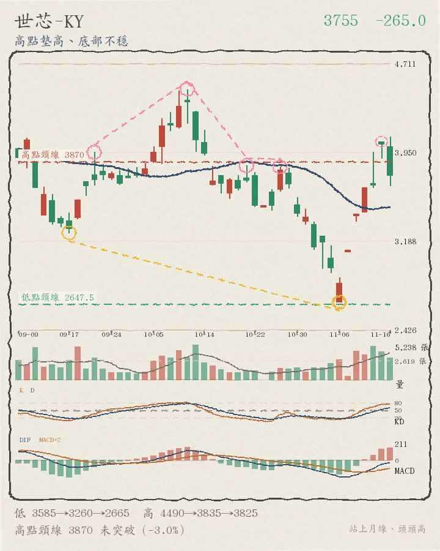
12:31 盤中 3715（-5.95%），比加權指數弱 2.76 個百分點、站上月線 3484.25，離高點頸線 3890 還差 4.5%，高點還在墊高（但底部沒同步墊高）。
- 月線位置：現價 3715 在月線 3484.25 之上（+6.6%）；5 日線 3780 也在月線之上（短均在上）；月線向上
- 量能：以已過交易時間推估，今天成交量約是 20 日均量的 2.49 倍（爆量），比 20 日均量大不少；下跌卻量增，量價背離
- 關鍵價位：高點頸線 3890 還沒突破，差 4.5%；前一交易日高點 3950（低於 5.9%）；今天盤中高點 4020（低於 7.6%）；今天盤中低點 3630（高於 2.3%）
- 轉折結構：高點 4490、3835、3825 墊高（頭頭高），但低點 3585、3260、2665 沒有同步墊高；還沒確認的轉折低點 11-06 2665、11-18 3440；還沒確認的轉折高點 11-16 4085、11-18 3950（圖上虛線小圈）
國巨* 2327 上市
324 -28.0（-7.95%）
區間或轉弱 盤中成交值 162.84 億・全榜第 5 名（上市第 5 名）・相對大盤 -4.76
好條件 0/7：無
不好條件 6/7：跌破前低、今日下跌、相對大盤弱、在月線之下、跌破昨日低點、月線下彎

12:31 盤中 324（-7.95%），比加權指數弱 4.76 個百分點、跌破月線 450.25，離高點頸線 441.5 還差 26.6%，轉折還沒走出明顯方向。
- 月線位置：現價 324 在月線 450.25 之下（-28.0%）；5 日線 381 也在月線之下（短均在下）；月線向下
- 量能：以已過交易時間推估，今天成交量約是 20 日均量的 1.60 倍（爆量），比 20 日均量大不少；下跌卻量增，量價背離
- 關鍵價位：已跌破前一個轉折低點；高點頸線 441.5 還在現價上方 26.6%；前一交易日高點 375（低於 13.6%）；今天盤中高點 354.5（低於 8.6%）；今天盤中低點 317（高於 2.2%）
- 轉折結構：低點 548、506、364.5 與高點 601、686、442 都沒有明顯遞增，屬於區間震盪或轉弱；還沒確認的轉折低點 11-12 405.5、11-18 331；還沒確認的轉折高點 11-10 442、11-12 441（圖上虛線小圈）
南亞科 2408 上市
297.5 -27.5（-8.46%）
區間或轉弱 盤中成交值 147.86 億・全榜第 6 名（上市第 6 名）・相對大盤 -5.27
好條件 0/7：無
不好條件 6/7：跌破前低、今日下跌、相對大盤弱、在月線之下、跌破昨日低點、月線下彎

12:31 盤中 297.5（-8.46%），比加權指數弱 5.27 個百分點、跌破月線 399.1，離高點頸線 409.5 還差 27.4%，轉折還沒走出明顯方向。
- 月線位置：現價 297.5 在月線 399.1 之下（-25.5%）；5 日線 350.1 也在月線之下（短均在下）；月線向下
- 量能：以已過交易時間推估，今天成交量約是 20 日均量的 1.33 倍（量增），比 20 日均量大不少；下跌卻量增，量價背離
- 關鍵價位：已跌破前一個轉折低點；高點頸線 409.5 還在現價上方 27.4%；前一交易日高點 345（低於 13.8%）；今天盤中高點 325（低於 8.5%）；今天盤中低點 293（高於 1.5%）
- 轉折結構：低點 488、412、324 與高點 537、497.5、417 都沒有明顯遞增，屬於區間震盪或轉弱；還沒確認的轉折低點 11-06 324、11-18 307；還沒確認的轉折高點 11-12 417、11-18 345（圖上虛線小圈）
南亞 1303 上市
228.5 -25.0（-9.86%）
區間或轉弱 盤中成交值 125.86 億・全榜第 7 名（上市第 7 名）・相對大盤 -6.67
好條件 0/7：無
不好條件 5/7：今日下跌、相對大盤弱、在月線之下、跌破昨日低點、月線下彎

12:31 盤中 228.5（-9.86%），比加權指數弱 6.67 個百分點、跌破月線 286.75，離高點頸線 324.5 還差 29.6%，轉折還沒走出明顯方向。
- 月線位置：現價 228.5 在月線 286.75 之下（-20.3%）；5 日線 277.2 也在月線之下（短均在下）；月線向下
- 量能：以已過交易時間推估，今天成交量約是 20 日均量的 0.69 倍（量縮），比 20 日均量少很多
- 關鍵價位：高點頸線 324.5 還沒突破，差 29.6%；前一交易日高點 280（低於 18.4%）；今天盤中高點 251.5（低於 9.1%）；今天盤中低點 228.5（高於 0.0%）
- 轉折結構：低點 223、295、224.5 與高點 325.5、325、325.5 都沒有明顯遞增，屬於區間震盪或轉弱；還沒確認的轉折低點 11-06 224.5、11-18 239.5；還沒確認的轉折高點 11-12 325.5、11-18 280（圖上虛線小圈）
量縮
↑ 回上方清單
日月光投控 3711 上市
511 -37.0（-6.75%）
區間或轉弱 盤中成交值 115.94 億・全榜第 8 名（上市第 8 名）・相對大盤 -3.56
好條件 0/7：無
不好條件 6/7：跌破前低、今日下跌、相對大盤弱、在月線之下、跌破昨日低點、月線下彎

12:31 盤中 511（-6.75%），比加權指數弱 3.56 個百分點、跌破月線 614.5，離高點頸線 704 還差 27.4%，轉折還沒走出明顯方向。
- 月線位置：現價 511 在月線 614.5 之下（-16.8%）；5 日線 560.4 也在月線之下（短均在下）；月線向下
- 量能：以已過交易時間推估，今天成交量約是 20 日均量的 1.22 倍（量增），比 20 日均量大不少；下跌卻量增，量價背離
- 關鍵價位：已跌破前一個轉折低點；高點頸線 704 還在現價上方 27.4%；前一交易日高點 565（低於 9.6%）；今天盤中高點 550（低於 7.1%）；今天盤中低點 498.5（高於 2.5%）
- 轉折結構：低點 715、639、515 與高點 699、709、630 都沒有明顯遞增，屬於區間震盪或轉弱；還沒確認的轉折低點 11-12 580、11-17 506；還沒確認的轉折高點 11-12 630、11-18 565（圖上虛線小圈）
穩懋 3105 上櫃
423 -47.0（-10.00%）
區間或轉弱 盤中成交值 115.23 億・全榜第 9 名（上櫃第 1 名）・相對大盤 -6.81
好條件 1/7：月線向上
不好條件 4/7：今日下跌、相對大盤弱、在月線之下、跌破昨日低點

12:31 盤中 423（-10.00%），比加權指數弱 6.81 個百分點、跌破月線 508.15，離高點頸線 580.33 還差 27.1%，轉折還沒走出明顯方向。
- 月線位置：現價 423 在月線 508.15 之下（-16.8%）；5 日線 509.6 也在月線之上（短均在上）；月線向上
- 量能：以已過交易時間推估，今天成交量約是 20 日均量的 1.25 倍（量增），比 20 日均量大不少；下跌卻量增，量價背離
- 關鍵價位：高點頸線 580.33 還沒突破，差 27.1%；前一交易日高點 510（低於 17.1%）；今天盤中高點 473（低於 10.6%）；今天盤中低點 423（高於 0.0%）
- 轉折結構：低點 454、479、403.5 與高點 630、596、573 都沒有明顯遞增，屬於區間震盪或轉弱；還沒確認的轉折低點 11-09 403.5、11-18 433；還沒確認的轉折高點 11-16 572、11-18 510（圖上虛線小圈）
健策 3653 上市
4170 -400.0（-8.75%）
區間或轉弱 盤中成交值 102.83 億・全榜第 10 名（上市第 9 名）・相對大盤 -5.56
好條件 0/7：無
不好條件 5/7：跌破前低、今日下跌、相對大盤弱、在月線之下、月線下彎
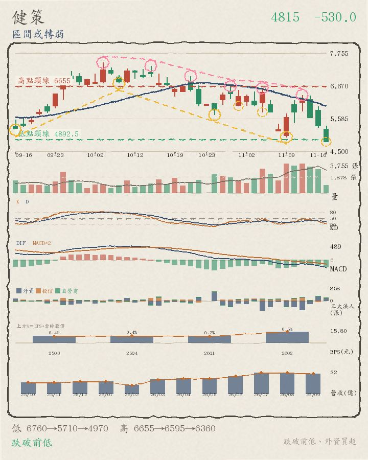
12:31 盤中 4170（-8.75%），比加權指數弱 5.56 個百分點、跌破月線 5789.25，離高點頸線 6536.67 還差 36.2%，轉折還沒走出明顯方向。
- 月線位置：現價 4170 在月線 5789.25 之下（-28.0%）；5 日線 4934 也在月線之下（短均在下）；月線向下
- 量能：以已過交易時間推估，今天成交量約是 20 日均量的 1.42 倍（量增），比 20 日均量大不少；下跌卻量增，量價背離
- 關鍵價位：已跌破前一個轉折低點；高點頸線 6536.67 還在現價上方 36.2%；前一交易日高點 4765（低於 12.5%）；今天盤中高點 4520（低於 7.7%）；今天盤中低點 4115（高於 1.3%）
- 轉折結構：低點 6760、5710、4970 與高點 6655、6595、6360 都沒有明顯遞增，屬於區間震盪或轉弱；還沒確認的轉折低點 11-09 4970、11-18 4075；還沒確認的轉折高點 11-11 6360、11-18 4765（圖上虛線小圈）
欣興 3037 上市
596 -66.0（-9.97%）
區間或轉弱 盤中成交值 100.14 億・全榜第 11 名（上市第 10 名）・相對大盤 -6.78
好條件 0/7：無
不好條件 6/7：跌破前低、今日下跌、相對大盤弱、在月線之下、跌破昨日低點、月線下彎

12:31 盤中 596（-9.97%），比加權指數弱 6.78 個百分點、跌破月線 890.25，離高點頸線 1190 還差 49.9%，轉折還沒走出明顯方向。
- 月線位置：現價 596 在月線 890.25 之下（-33.0%）；5 日線 716.6 也在月線之下（短均在下）；月線向下
- 量能：以已過交易時間推估，今天成交量約是 20 日均量的 0.83 倍（量平），比 20 日均量少很多
- 關鍵價位：已跌破前一個轉折低點；高點頸線 1190 還在現價上方 49.9%；前一交易日高點 691（低於 13.7%）；今天盤中高點 654（低於 8.9%）；今天盤中低點 596（高於 0.0%）
- 轉折結構：低點 932、1040、720 與高點 1420、1180、894 都沒有明顯遞增，屬於區間震盪或轉弱；還沒確認的轉折低點 11-06 720、11-18 607；還沒確認的轉折高點 11-12 894、11-18 691（圖上虛線小圈）
奇鋐 3017 上市
2445 -270.0（-9.94%）
區間或轉弱 盤中成交值 99.88 億・全榜第 12 名（上市第 11 名）・相對大盤 -6.75
好條件 0/7：無
不好條件 4/7：今日下跌、相對大盤弱、在月線之下、月線下彎

12:31 盤中 2445（-9.94%），比加權指數弱 6.75 個百分點、跌破月線 2893.5，離高點頸線 3087.5 還差 20.8%，轉折還沒走出明顯方向。
- 月線位置：現價 2445 在月線 2893.5 之下（-15.5%）；5 日線 2748 也在月線之下（短均在下）；月線向下
- 量能：以已過交易時間推估，今天成交量約是 20 日均量的 1.67 倍（爆量），比 20 日均量大不少；下跌卻量增，量價背離
- 關鍵價位：高點頸線 3087.5 還沒突破，差 20.8%；前一交易日高點 2715（低於 9.9%）；今天盤中高點 2695（低於 9.3%）；今天盤中低點 2445（高於 0.0%）
- 轉折結構：低點 3050、2310、2310 與高點 3700、3450、3060 都沒有明顯遞增，屬於區間震盪或轉弱；還沒確認的轉折低點 11-12 2750、11-18 2440；還沒確認的轉折高點 11-12 3060、11-18 2715（圖上虛線小圈）
聯電 2303 上市
89.6 -3.4（-3.66%）
區間或轉弱 盤中成交值 93.73 億・全榜第 13 名（上市第 12 名）・相對大盤 -0.47
好條件 0/7：無
不好條件 4/7：今日下跌、相對大盤弱、在月線之下、月線下彎

12:31 盤中 89.6（-3.66%），比加權指數弱 0.47 個百分點、跌破月線 107.485，離高點頸線 166.75 還差 46.3%，轉折還沒走出明顯方向。
- 月線位置：現價 89.6 在月線 107.485 之下（-16.6%）；5 日線 96.62 也在月線之下（短均在下）；月線向下
- 量能：以已過交易時間推估，今天成交量約是 20 日均量的 0.92 倍（量平），比 20 日均量少一些
- 關鍵價位：高點頸線 166.75 還沒突破，差 46.3%；前一交易日高點 95.1（低於 5.8%）；今天盤中高點 94.3（低於 5.0%）；今天盤中低點 87.7（高於 2.2%）
- 轉折結構：低點 135、151.5、88.6 與高點 168.5、165、107.5 都沒有明顯遞增，屬於區間震盪或轉弱；還沒確認的轉折低點 11-06 88.6、11-18 89.2；還沒確認的轉折高點 11-12 107.5（圖上虛線小圈）
量平
↑ 回上方清單
鴻海 2317 上市
222.5 +1.5（+0.68%）
區間或轉弱 盤中成交值 91.26 億・全榜第 14 名（上市第 13 名）・相對大盤 +3.87
好條件 1/7：攻擊量（量增＋上漲）
不好條件 2/7：在月線之下、月線下彎

12:31 盤中 222.5（+0.68%），比加權指數強 3.87 個百分點、跌破月線 239.525，離高點頸線 246.25 還差 9.6%，轉折還沒走出明顯方向。
- 月線位置：現價 222.5 在月線 239.525 之下（-7.1%）；5 日線 227.9 也在月線之下（短均在下）；月線向下
- 量能：以已過交易時間推估，今天成交量約是 20 日均量的 1.17 倍（量增），比 20 日均量大不少；上漲又量增，量價配合
- 關鍵價位：高點頸線 246.25 還沒突破，差 9.6%；前一交易日高點 224.5（低於 0.9%）；今天盤中高點 225.5（低於 1.3%）；今天盤中低點 217（高於 2.5%）
- 轉折結構：低點 247、237、212.5 與高點 266.5、253.5、247.5 都沒有明顯遞增，屬於區間震盪或轉弱；還沒確認的轉折低點 11-17 215、11-18 215；還沒確認的轉折高點 11-10 247.5、11-12 245（圖上虛線小圈）
智邦 2345 上市
1370 -50.0（-3.52%）
區間或轉弱 盤中成交值 89.46 億・全榜第 15 名（上市第 14 名）・相對大盤 -0.33
好條件 0/7：無
不好條件 4/7：今日下跌、相對大盤弱、在月線之下、月線下彎

12:31 盤中 1370（-3.52%），比加權指數弱 0.33 個百分點、跌破月線 1563，轉折還沒走出明顯方向。
- 月線位置：現價 1370 在月線 1563 之下（-12.3%）；5 日線 1435 也在月線之下（短均在下）；月線向下
- 量能：以已過交易時間推估，今天成交量約是 20 日均量的 1.93 倍（爆量），比 20 日均量大不少；下跌卻量增，量價背離
- 關鍵價位：前一交易日高點 1460（低於 6.2%）；今天盤中高點 1535（低於 10.7%）；今天盤中低點 1345（高於 1.9%）
- 轉折結構：低點 1970、1910、1245 與高點 2055、1875、1665 都沒有明顯遞增，屬於區間震盪或轉弱；還沒確認的轉折低點 11-06 1245、11-17 1290；還沒確認的轉折高點 11-12 1665、11-18 1460（圖上虛線小圈）
台光電 2383 上市
3120 -345.0（-9.96%）
區間或轉弱 盤中成交值 89.42 億・全榜第 16 名（上市第 15 名）・相對大盤 -6.77
好條件 0/7：無
不好條件 6/7：跌破前低、今日下跌、相對大盤弱、在月線之下、跌破昨日低點、月線下彎
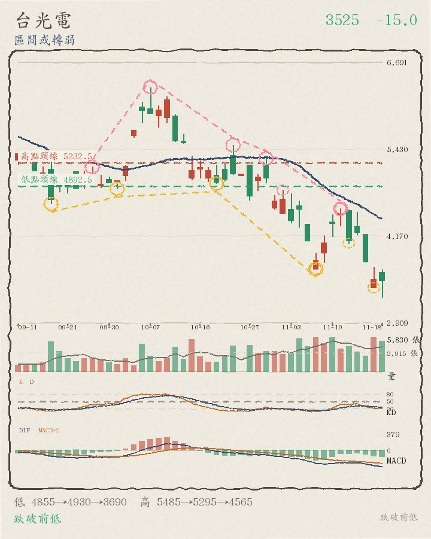
12:31 盤中 3120（-9.96%），比加權指數弱 6.77 個百分點、跌破月線 4411，離高點頸線 5232.5 還差 40.4%，轉折還沒走出明顯方向。
- 月線位置：現價 3120 在月線 4411 之下（-29.3%）；5 日線 3824 也在月線之下（短均在下）；月線向下
- 量能：以已過交易時間推估，今天成交量約是 20 日均量的 0.93 倍（量平），比 20 日均量少一些
- 關鍵價位：已跌破前一個轉折低點；高點頸線 5232.5 還在現價上方 40.4%；前一交易日高點 3680（低於 15.2%）；今天盤中高點 3485（低於 10.5%）；今天盤中低點 3120（高於 0.0%）
- 轉折結構：低點 4855、4930、3690 與高點 5485、5295、4565 都沒有明顯遞增，屬於區間震盪或轉弱；還沒確認的轉折低點 11-12 4065、11-18 3275；還沒確認的轉折高點 11-11 4565（圖上虛線小圈）
大立光 3008 上市
3985 -425.0（-9.64%）
區間或轉弱 盤中成交值 87.47 億・全榜第 17 名（上市第 16 名）・相對大盤 -6.45
好條件 0/7：無
不好條件 7/7：跌破前低、今日下跌、相對大盤弱、在月線之下、貼近今日低點（1% 內）、跌破昨日低點、月線下彎

12:31 盤中 3985（-9.64%），比加權指數弱 6.45 個百分點、跌破月線 5296.75，轉折還沒走出明顯方向。
- 月線位置：現價 3985 在月線 5296.75 之下（-24.8%）；5 日線 4814 也在月線之下（短均在下）；月線向下
- 量能：以已過交易時間推估，今天成交量約是 20 日均量的 1.20 倍（量增），比 20 日均量大不少；下跌卻量增，量價背離
- 關鍵價位：前一交易日高點 4820（低於 17.3%）；今天盤中高點 4395（低於 9.3%）；今天盤中低點 3970（高於 0.4%）
- 轉折結構：低點 6355、5970、4075 與高點 7460、6370、5560 都沒有明顯遞增，屬於區間震盪或轉弱；還沒確認的轉折低點 11-06 4075、11-18 4205；還沒確認的轉折高點 11-13 5560、11-18 4820（圖上虛線小圈）
貿聯-KY 3665 上市
1480 -70.0（-4.52%）
區間或轉弱 盤中成交值 82.78 億・全榜第 18 名（上市第 17 名）・相對大盤 -1.33
好條件 0/7：無
不好條件 4/7：今日下跌、相對大盤弱、在月線之下、月線下彎

12:31 盤中 1480（-4.52%），比加權指數弱 1.33 個百分點、跌破月線 1606.75，離高點頸線 1652.5 還差 10.4%，轉折還沒走出明顯方向。
- 月線位置：現價 1480 在月線 1606.75 之下（-7.9%）；5 日線 1493 也在月線之下（短均在下）；月線向下
- 量能：以已過交易時間推估，今天成交量約是 20 日均量的 2.12 倍（爆量），比 20 日均量大不少；下跌卻量增，量價背離
- 關鍵價位：高點頸線 1652.5 還沒突破，差 10.4%；前一交易日高點 1550（低於 4.5%）；今天盤中高點 1590（低於 6.9%）；今天盤中低點 1440（高於 2.8%）
- 轉折結構：低點 1930、1810、1295 與高點 2685、2080、1630 都沒有明顯遞增，屬於區間震盪或轉弱；還沒確認的轉折低點 11-09 1295、11-17 1365；還沒確認的轉折高點 11-12 1630、11-18 1550（圖上虛線小圈）
群聯 8299 上櫃
1500 -20.0（-1.32%）
區間或轉弱 盤中成交值 76.94 億・全榜第 19 名（上櫃第 2 名）・相對大盤 +1.87
好條件 1/7：守住今日高檔（距今日高點 1% 內）
不好條件 3/7：今日下跌、在月線之下、月線下彎

12:31 盤中 1500（-1.32%），比加權指數強 1.87 個百分點、跌破月線 1742.75，離高點頸線 1762.5 還差 14.9%，轉折還沒走出明顯方向。
- 月線位置：現價 1500 在月線 1742.75 之下（-13.9%）；5 日線 1569 也在月線之下（短均在下）；月線向下
- 量能：以已過交易時間推估，今天成交量約是 20 日均量的 1.98 倍（爆量），比 20 日均量大不少；下跌卻量增，量價背離
- 關鍵價位：高點頸線 1762.5 還沒突破，差 14.9%；前一交易日高點 1625（低於 7.7%）；今天盤中高點 1515（低於 1.0%）；今天盤中低點 1425（高於 5.3%）
- 轉折結構：低點 1785、1865、1405 與高點 2350、2090、1765 都沒有明顯遞增，屬於區間震盪或轉弱；還沒確認的轉折低點 11-12 1635、11-17 1430；還沒確認的轉折高點 11-12 1765、11-18 1625（圖上虛線小圈）
臻鼎-KY 4958 上市
349 -33.0（-8.64%）
區間或轉弱 盤中成交值 67.78 億・全榜第 20 名（上市第 18 名）・相對大盤 -5.45
好條件 0/7：無
不好條件 6/7：跌破前低、今日下跌、相對大盤弱、在月線之下、跌破昨日低點、月線下彎

12:31 盤中 349（-8.64%），比加權指數弱 5.45 個百分點、跌破月線 461.3，離高點頸線 613.5 還差 43.1%，轉折還沒走出明顯方向。
- 月線位置：現價 349 在月線 461.3 之下（-24.3%）；5 日線 403.7 也在月線之下（短均在下）；月線向下
- 量能：以已過交易時間推估，今天成交量約是 20 日均量的 0.89 倍（量平），比 20 日均量少一些
- 關鍵價位：已跌破前一個轉折低點；高點頸線 613.5 還在現價上方 43.1%；前一交易日高點 397（低於 12.1%）；今天盤中高點 382（低於 8.6%）；今天盤中低點 344（高於 1.5%）
- 轉折結構：低點 463.5、518、355 與高點 613、614、466.5 都沒有明顯遞增，屬於區間震盪或轉弱；還沒確認的轉折低點 11-12 429、11-18 355.5；還沒確認的轉折高點 11-12 466.5、11-18 397（圖上虛線小圈）
台玻 1802 上市
58.7 -6.5（-9.97%）
區間或轉弱 盤中成交值 67.66 億・全榜第 21 名（上市第 19 名）・相對大盤 -6.78
好條件 1/7：月線向上
不好條件 4/7：今日下跌、相對大盤弱、在月線之下、跌破昨日低點

12:31 盤中 58.7（-9.97%），比加權指數弱 6.78 個百分點、跌破月線 68.005，離高點頸線 62.47 還差 6.0%，轉折還沒走出明顯方向。
- 月線位置：現價 58.7 在月線 68.005 之下（-13.7%）；5 日線 75.52 也在月線之上（短均在上）；月線向上
- 量能：以已過交易時間推估，今天成交量約是 20 日均量的 0.76 倍（量平），比 20 日均量少很多
- 關鍵價位：高點頸線 62.47 還沒突破，差 6.0%；前一交易日高點 72.2（低於 18.7%）；今天盤中高點 65.3（低於 10.1%）；今天盤中低點 58.7（高於 0.0%）
- 轉折結構：低點 56.6、58.8、54.1 與高點 73.6、70、89.5 都沒有明顯遞增，屬於區間震盪或轉弱；還沒確認的轉折低點 11-06 54.1、11-18 62.1；還沒確認的轉折高點 11-03 70、11-13 89.5（圖上虛線小圈）
啟碁 6285 上市
196.5 -5.5（-2.72%）
區間或轉弱 盤中成交值 65.56 億・全榜第 22 名（上市第 20 名）・相對大盤 +0.47
好條件 0/7：無
不好條件 3/7：今日下跌、在月線之下、月線下彎

12:31 盤中 196.5（-2.72%），比加權指數強 0.47 個百分點、跌破月線 204.75，離高點頸線 200.25 還差 1.9%，轉折還沒走出明顯方向。
- 月線位置：現價 196.5 在月線 204.75 之下（-4.0%）；5 日線 189.2 也在月線之下（短均在下）；月線向下
- 量能：以已過交易時間推估，今天成交量約是 20 日均量的 5.35 倍（爆量），比 20 日均量大不少；下跌卻量增，量價背離
- 關鍵價位：高點頸線 200.25 還沒突破，差 1.9%；前一交易日高點 202（低於 2.7%）；今天盤中高點 203.5（低於 3.4%）；今天盤中低點 187（高於 5.1%）
- 轉折結構：低點 216、240.5、164.5 與高點 270、266、207.5 都沒有明顯遞增，屬於區間震盪或轉弱；還沒確認的轉折低點 11-12 187、11-17 171；還沒確認的轉折高點 11-12 207.5、11-18 202（圖上虛線小圈）
創意 3443 上市
6000 -665.0（-9.98%）
區間或轉弱 盤中成交值 65.46 億・全榜第 23 名（上市第 21 名）・相對大盤 -6.79
好條件 0/7：無
不好條件 5/7：今日下跌、相對大盤弱、在月線之下、跌破昨日低點、月線下彎

12:31 盤中 6000（-9.98%），比加權指數弱 6.79 個百分點、跌破月線 7373.5，離高點頸線 8537 還差 29.7%，轉折還沒走出明顯方向。
- 月線位置：現價 6000 在月線 7373.5 之下（-18.6%）；5 日線 7572 也在月線之上（短均在上）；月線向下
- 量能：以已過交易時間推估，今天成交量約是 20 日均量的 0.54 倍（量縮），比 20 日均量少很多
- 關鍵價位：高點頸線 8537 還沒突破，差 29.7%；前一交易日高點 6960（低於 13.8%）；今天盤中高點 6510（低於 7.8%）；今天盤中低點 6000（高於 0.0%）
- 轉折結構：低點 7065、7200、5765 與高點 8490、8255、8645 都沒有明顯遞增，屬於區間震盪或轉弱；還沒確認的轉折低點 11-06 5765、11-18 6280；還沒確認的轉折高點 11-13 8645（圖上虛線小圈）
量縮
↑ 回上方清單
富喬 1815 上櫃
110 -12.0（-9.84%）
區間或轉弱 盤中成交值 64.08 億・全榜第 24 名（上櫃第 3 名）・相對大盤 -6.65
好條件 0/7：無
不好條件 4/7：今日下跌、相對大盤弱、在月線之下、月線下彎

12:31 盤中 110（-9.84%），比加權指數弱 6.65 個百分點、跌破月線 132.75，離高點頸線 144.33 還差 23.8%，轉折還沒走出明顯方向。
- 月線位置：現價 110 在月線 132.75 之下（-17.1%）；5 日線 130 也在月線之下（短均在下）；月線向下
- 量能：以已過交易時間推估，今天成交量約是 20 日均量的 0.60 倍（量縮），比 20 日均量少很多
- 關鍵價位：高點頸線 144.33 還沒突破，差 23.8%；前一交易日高點 124.5（低於 11.6%）；今天盤中高點 121.5（低於 9.5%）；今天盤中低點 110（高於 0.0%）
- 轉折結構：低點 113、124、109.5 與高點 149、143.5、150.5 都沒有明顯遞增，屬於區間震盪或轉弱；還沒確認的轉折低點 11-06 109.5、11-18 110；還沒確認的轉折高點 11-10 140.5、11-12 150.5（圖上虛線小圈）
量縮
↑ 回上方清單
華邦電 2344 上市
100 -8.0（-7.41%）
區間或轉弱 盤中成交值 57.9 億・全榜第 25 名（上市第 22 名）・相對大盤 -4.22
好條件 0/7：無
不好條件 6/7：跌破前低、今日下跌、相對大盤弱、在月線之下、跌破昨日低點、月線下彎

12:31 盤中 100（-7.41%），比加權指數弱 4.22 個百分點、跌破月線 141.2，離高點頸線 141.5 還差 29.3%，轉折還沒走出明顯方向。
- 月線位置：現價 100 在月線 141.2 之下（-29.2%）；5 日線 116.8 也在月線之下（短均在下）；月線向下
- 量能：以已過交易時間推估，今天成交量約是 20 日均量的 1.13 倍（量增），比 20 日均量大一些；下跌卻量增，量價背離
- 關鍵價位：已跌破前一個轉折低點；高點頸線 141.5 還在現價上方 29.3%；前一交易日高點 115（低於 13.0%）；今天盤中高點 108（低於 7.4%）；今天盤中低點 98（高於 2.0%）
- 轉折結構：低點 151、151、115 與高點 184、178.5、142 都沒有明顯遞增，屬於區間震盪或轉弱；還沒確認的轉折低點 11-11 127、11-18 102.5；還沒確認的轉折高點 11-12 141、11-18 115（圖上虛線小圈）
華通 2313 上市
170 -17.5（-9.33%）
區間或轉弱 盤中成交值 56.88 億・全榜第 26 名（上市第 23 名）・相對大盤 -6.14
好條件 0/7：無
不好條件 5/7：今日下跌、相對大盤弱、在月線之下、貼近今日低點（1% 內）、月線下彎
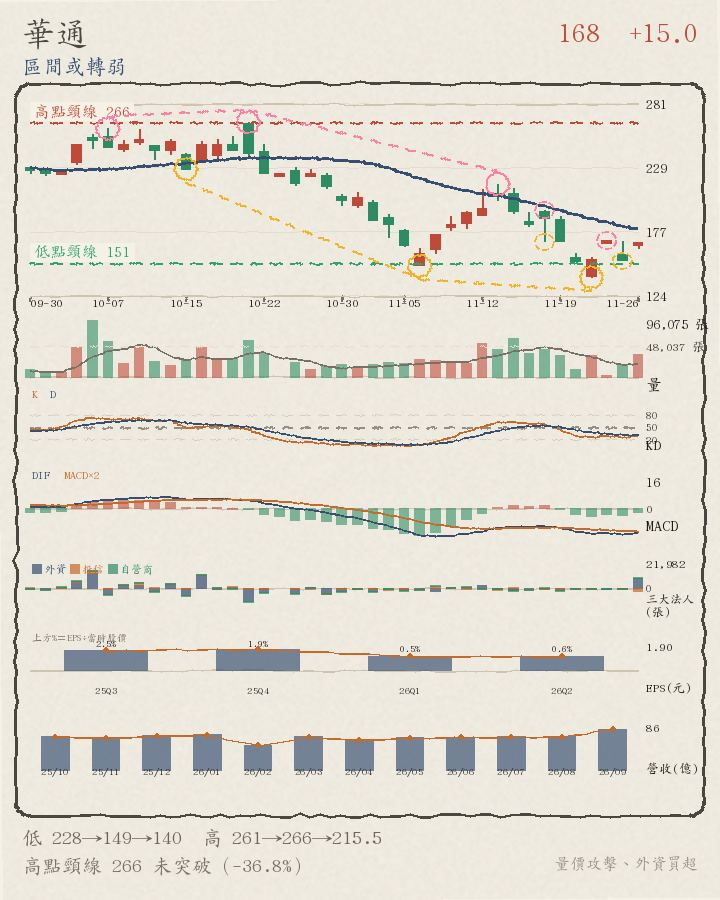
12:31 盤中 170（-9.33%），比加權指數弱 6.14 個百分點、跌破月線 197.95，離高點頸線 261.67 還差 35.0%，轉折還沒走出明顯方向。
- 月線位置：現價 170 在月線 197.95 之下（-14.1%）；5 日線 193.3 也在月線之下（短均在下）；月線向下
- 量能：以已過交易時間推估，今天成交量約是 20 日均量的 1.34 倍（量增），比 20 日均量大不少；下跌卻量增，量價背離
- 關鍵價位：高點頸線 261.67 還沒突破，差 35.0%；前一交易日高點 194.5（低於 12.6%）；今天盤中高點 189（低於 10.1%）；今天盤中低點 169（高於 0.6%）
- 轉折結構：低點 219、228、149 與高點 261、266、215.5 都沒有明顯遞增，屬於區間震盪或轉弱；還沒確認的轉折低點 11-06 149、11-18 168.5；還沒確認的轉折高點 11-13 215.5、11-18 194.5（圖上虛線小圈）
量增
↑ 回上方清單
金像電 2368 上市
790 -87.0（-9.92%）
區間或轉弱 盤中成交值 56.2 億・全榜第 27 名（上市第 24 名）・相對大盤 -6.73
好條件 0/7：無
不好條件 5/7：今日下跌、相對大盤弱、在月線之下、跌破昨日低點、月線下彎

12:31 盤中 790（-9.92%），比加權指數弱 6.73 個百分點、跌破月線 1003.55，離高點頸線 1085 還差 27.2%，轉折還沒走出明顯方向。
- 月線位置：現價 790 在月線 1003.55 之下（-21.3%）；5 日線 928.8 也在月線之下（短均在下）；月線向下
- 量能：以已過交易時間推估，今天成交量約是 20 日均量的 0.92 倍（量平），比 20 日均量少一些
- 關鍵價位：高點頸線 1085 還沒突破，差 27.2%；前一交易日高點 906（低於 12.8%）；今天盤中高點 877（低於 9.9%）；今天盤中低點 790（高於 0.0%）
- 轉折結構：低點 950、1120、782 與高點 1295、1190、1085 都沒有明顯遞增，屬於區間震盪或轉弱；還沒確認的轉折低點 11-12 968、11-18 791；還沒確認的轉折高點 11-12 1085、11-18 906（圖上虛線小圈）
量平
↑ 回上方清單
景碩 3189 上市
522 -57.0（-9.84%）
區間或轉弱 盤中成交值 56.08 億・全榜第 28 名（上市第 25 名）・相對大盤 -6.65
好條件 0/7：無
不好條件 6/7：跌破前低、今日下跌、相對大盤弱、在月線之下、跌破昨日低點、月線下彎

12:31 盤中 522（-9.84%），比加權指數弱 6.65 個百分點、跌破月線 802.25，離高點頸線 835 還差 37.5%，轉折還沒走出明顯方向。
- 月線位置：現價 522 在月線 802.25 之下（-34.9%）；5 日線 611.6 也在月線之下（短均在下）；月線向下
- 量能：以已過交易時間推估，今天成交量約是 20 日均量的 0.85 倍（量平），比 20 日均量少一些
- 關鍵價位：已跌破前一個轉折低點；高點頸線 835 還在現價上方 37.5%；前一交易日高點 596（低於 12.4%）；今天盤中高點 559（低於 6.6%）；今天盤中低點 522（高於 0.0%）
- 轉折結構：低點 941、666、666 與高點 835、1150、1065 都沒有明顯遞增，屬於區間震盪或轉弱；還沒確認的轉折低點 11-09 666、11-18 530；還沒確認的轉折高點 11-10 752、11-18 596（圖上虛線小圈）
台燿 6274 上櫃
692 -76.0（-9.90%）
區間或轉弱 盤中成交值 55.37 億・全榜第 29 名（上櫃第 4 名）・相對大盤 -6.71
好條件 0/7：無
不好條件 6/7：跌破前低、今日下跌、相對大盤弱、在月線之下、跌破昨日低點、月線下彎

12:31 盤中 692（-9.90%），比加權指數弱 6.71 個百分點、跌破月線 1117.25，離高點頸線 1446.67 還差 52.2%，轉折還沒走出明顯方向。
- 月線位置：現價 692 在月線 1117.25 之下（-38.1%）；5 日線 873 也在月線之下（短均在下）；月線向下
- 量能：以已過交易時間推估，今天成交量約是 20 日均量的 0.81 倍（量平），比 20 日均量少很多
- 關鍵價位：已跌破前一個轉折低點；高點頸線 1446.67 還在現價上方 52.2%；前一交易日高點 816（低於 15.2%）；今天盤中高點 775（低於 10.7%）；今天盤中低點 692（高於 0.0%）
- 轉折結構：低點 1295、1275、897 與高點 1835、1450、1080 都沒有明顯遞增，屬於區間震盪或轉弱；還沒確認的轉折低點 11-12 954、11-18 720；還沒確認的轉折高點 11-12 1080（圖上虛線小圈）
精材 3374 上櫃
355 -39.0（-9.90%）
區間或轉弱 盤中成交值 50.21 億・全榜第 30 名（上櫃第 5 名）・相對大盤 -6.71
好條件 1/7：月線向上
不好條件 5/7：跌破前低、今日下跌、相對大盤弱、在月線之下、跌破昨日低點
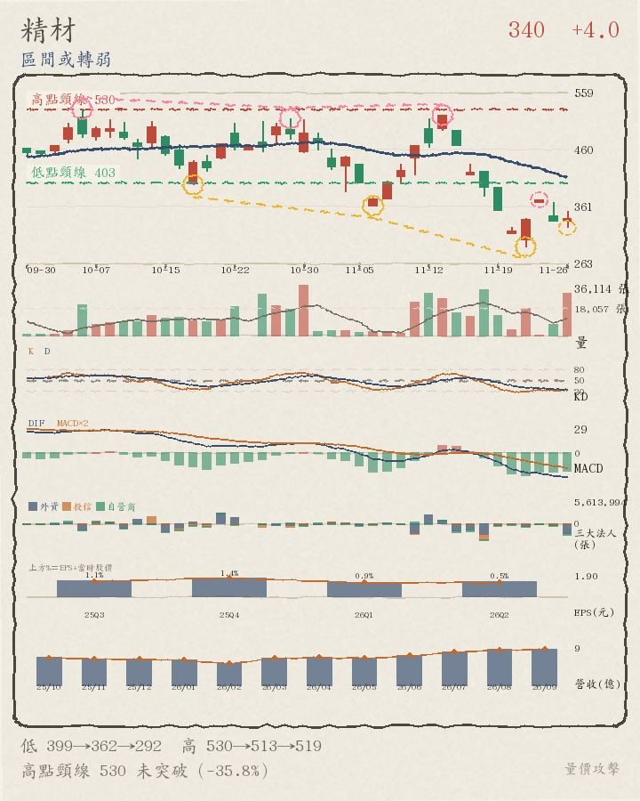
12:31 盤中 355（-9.90%），比加權指數弱 6.71 個百分點、跌破月線 451.55，離高點頸線 520.67 還差 31.8%，轉折還沒走出明顯方向。
- 月線位置：現價 355 在月線 451.55 之下（-21.4%）；5 日線 454.7 也在月線之上（短均在上）；月線向上
- 量能：以已過交易時間推估，今天成交量約是 20 日均量的 1.24 倍（量增），比 20 日均量大不少；下跌卻量增，量價背離
- 關鍵價位：已跌破前一個轉折低點；高點頸線 520.67 還在現價上方 31.8%；前一交易日高點 422.5（低於 16.0%）；今天盤中高點 395（低於 10.1%）；今天盤中低點 355（高於 0.0%）
- 轉折結構：低點 436.5、399、362.5 與高點 530、513、519 都沒有明顯遞增，屬於區間震盪或轉弱；還沒確認的轉折低點 11-06 362.5、11-18 379；還沒確認的轉折高點 11-13 519（圖上虛線小圈）
群創 3481 上市
33.7 -2.9（-7.80%）
區間或轉弱 盤中成交值 47.92 億・全榜第 31 名（上市第 26 名）・相對大盤 -4.61
好條件 0/7：無
不好條件 5/7：跌破前低、今日下跌、相對大盤弱、在月線之下、月線下彎

12:31 盤中 33.7（-7.80%），比加權指數弱 4.61 個百分點、跌破月線 41.617，轉折還沒走出明顯方向。
- 月線位置：現價 33.7 在月線 41.617 之下（-19.0%）；5 日線 37.39 也在月線之下（短均在下）；月線向下
- 量能：以已過交易時間推估，今天成交量約是 20 日均量的 1.29 倍（量增），比 20 日均量大不少；下跌卻量增，量價背離
- 關鍵價位：前一交易日高點 37（低於 8.9%）；今天盤中高點 36.35（低於 7.3%）；今天盤中低點 32.9（高於 2.4%）
- 轉折結構：低點 48.55、45.65、34.2 與高點 56.2、49.7、43.3 都沒有明顯遞增，屬於區間震盪或轉弱；還沒確認的轉折低點 11-12 38.85、11-18 33.45；還沒確認的轉折高點 11-12 43.3、11-18 37（圖上虛線小圈）
華新科 2492 上市
210 -21.0（-9.09%）
區間或轉弱 盤中成交值 46.94 億・全榜第 32 名（上市第 27 名）・相對大盤 -5.90
好條件 0/7：無
不好條件 7/7：跌破前低、今日下跌、相對大盤弱、在月線之下、貼近今日低點（1% 內）、跌破昨日低點、月線下彎

12:31 盤中 210（-9.09%），比加權指數弱 5.90 個百分點、跌破月線 319.175，離高點頸線 428.33 還差 51.0%，轉折還沒走出明顯方向。
- 月線位置：現價 210 在月線 319.175 之下（-34.2%）；5 日線 255.7 也在月線之下（短均在下）；月線向下
- 量能：以已過交易時間推估，今天成交量約是 20 日均量的 0.94 倍（量平），比 20 日均量少一些
- 關鍵價位：已跌破前一個轉折低點；高點頸線 428.33 還在現價上方 51.0%；前一交易日高點 241（低於 12.9%）；今天盤中高點 234（低於 10.3%）；今天盤中低點 208（高於 1.0%）
- 轉折結構：低點 376.5、355.5、253.5 與高點 422、431.5、307 都沒有明顯遞增，屬於區間震盪或轉弱；還沒確認的轉折低點 11-12 272、11-18 217.5；還沒確認的轉折高點 11-11 307（圖上虛線小圈）
緯穎 6669 上市
1425 -50.0（-3.39%）
區間或轉弱 盤中成交值 46.58 億・全榜第 33 名（上市第 28 名）・相對大盤 -0.20
好條件 0/7：無
不好條件 6/7：跌破前低、今日下跌、相對大盤弱、在月線之下、跌破昨日低點、月線下彎
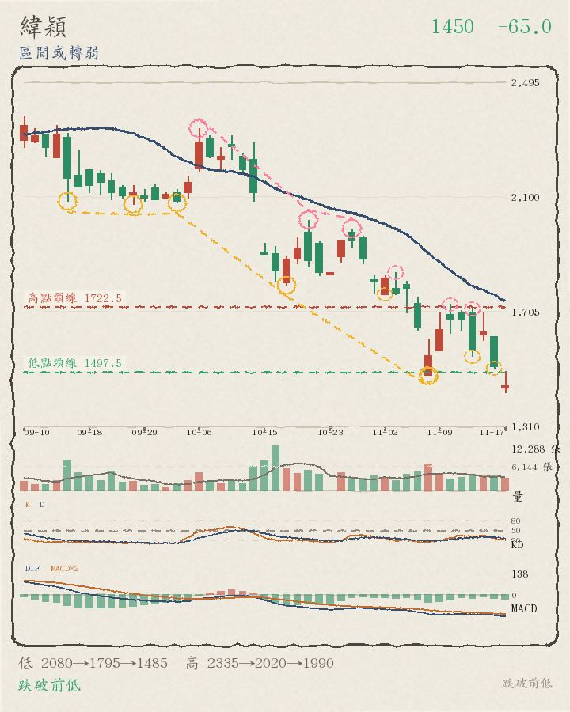
12:31 盤中 1425（-3.39%），比加權指數弱 0.20 個百分點、跌破月線 1719.25，離高點頸線 1722.5 還差 17.3%，轉折還沒走出明顯方向。
- 月線位置：現價 1425 在月線 1719.25 之下（-17.1%）；5 日線 1529 也在月線之下（短均在下）；月線向下
- 量能：以已過交易時間推估，今天成交量約是 20 日均量的 0.99 倍（量平），跟 20 日均量差不多
- 關鍵價位：已跌破前一個轉折低點；高點頸線 1722.5 還在現價上方 17.3%；前一交易日高點 1505（低於 5.3%）；今天盤中高點 1490（低於 4.4%）；今天盤中低點 1380（高於 3.3%）
- 轉折結構：低點 2080、1795、1485 與高點 2335、2020、1990 都沒有明顯遞增，屬於區間震盪或轉弱；還沒確認的轉折低點 11-12 1550、11-17 1425；還沒確認的轉折高點 11-12 1715、11-18 1505（圖上虛線小圈）
川湖 2059 上市
5980 -540.0（-8.28%）
區間或轉弱 盤中成交值 46.11 億・全榜第 34 名（上市第 29 名）・相對大盤 -5.09
好條件 0/7：無
不好條件 6/7：跌破前低、今日下跌、相對大盤弱、在月線之下、跌破昨日低點、月線下彎

12:31 盤中 5980（-8.28%），比加權指數弱 5.09 個百分點、跌破月線 8673，離高點頸線 10435 還差 42.7%，轉折還沒走出明顯方向。
- 月線位置：現價 5980 在月線 8673 之下（-31.1%）；5 日線 7251 也在月線之下（短均在下）；月線向下
- 量能：以已過交易時間推估，今天成交量約是 20 日均量的 1.50 倍（爆量），比 20 日均量大不少；下跌卻量增，量價背離
- 關鍵價位：已跌破前一個轉折低點；高點頸線 10435 還在現價上方 42.7%；前一交易日高點 6750（低於 11.4%）；今天盤中高點 6570（低於 9.0%）；今天盤中低點 5870（高於 1.9%）
- 轉折結構：低點 11700、9500、7200 與高點 10580、10290、9100 都沒有明顯遞增，屬於區間震盪或轉弱；還沒確認的轉折低點 11-06 7200、11-18 6210；還沒確認的轉折高點 11-03 9850、11-12 9100（圖上虛線小圈）
環球晶 6488 上櫃
493 -51.0（-9.38%）
區間或轉弱 盤中成交值 43 億・全榜第 35 名（上櫃第 6 名）・相對大盤 -6.19
好條件 0/7：無
不好條件 7/7：跌破前低、今日下跌、相對大盤弱、在月線之下、貼近今日低點（1% 內）、跌破昨日低點、月線下彎

12:31 盤中 493（-9.38%），比加權指數弱 6.19 個百分點、跌破月線 681.7，離高點頸線 1013.33 還差 51.3%，轉折還沒走出明顯方向。
- 月線位置：現價 493 在月線 681.7 之下（-27.7%）；5 日線 583.8 也在月線之下（短均在下）；月線向下
- 量能：以已過交易時間推估，今天成交量約是 20 日均量的 0.96 倍（量平），跟 20 日均量差不多
- 關鍵價位：已跌破前一個轉折低點；高點頸線 1013.33 還在現價上方 51.3%；前一交易日高點 577（低於 14.6%）；今天盤中高點 551（低於 10.5%）；今天盤中低點 490（高於 0.6%）
- 轉折結構：低點 875、872、508 與高點 1010、1260、663 都沒有明顯遞增，屬於區間震盪或轉弱；還沒確認的轉折低點 11-06 508、11-18 507；還沒確認的轉折高點 11-12 663、11-18 577（圖上虛線小圈）
南電 8046 上市
698 -77.0（-9.94%）
區間或轉弱 盤中成交值 42.68 億・全榜第 36 名（上市第 30 名）・相對大盤 -6.75
好條件 0/7：無
不好條件 6/7：跌破前低、今日下跌、相對大盤弱、在月線之下、跌破昨日低點、月線下彎

12:31 盤中 698（-9.94%），比加權指數弱 6.75 個百分點、跌破月線 1073.05，離高點頸線 1102.5 還差 36.7%，轉折還沒走出明顯方向。
- 月線位置：現價 698 在月線 1073.05 之下（-35.0%）；5 日線 879.2 也在月線之下（短均在下）；月線向下
- 量能：以已過交易時間推估，今天成交量約是 20 日均量的 0.79 倍（量平），比 20 日均量少很多
- 關鍵價位：已跌破前一個轉折低點；高點頸線 1102.5 還在現價上方 36.7%；前一交易日高點 846（低於 17.5%）；今天盤中高點 766（低於 8.9%）；今天盤中低點 698（高於 0.0%）
- 轉折結構：低點 1025、1050、867 與高點 1560、1400、1080 都沒有明顯遞增，屬於區間震盪或轉弱；還沒確認的轉折低點 11-12 972、11-18 716；還沒確認的轉折高點 11-11 1080、11-18 846（圖上虛線小圈）
力積電 6770 上市
49.7 -2.2（-4.24%）
區間或轉弱 盤中成交值 40.38 億・全榜第 37 名（上市第 31 名）・相對大盤 -1.05
好條件 0/7：無
不好條件 5/7：今日下跌、相對大盤弱、在月線之下、貼近今日低點（1% 內）、月線下彎

12:31 盤中 49.7（-4.24%），比加權指數弱 1.05 個百分點、跌破月線 60.72，離高點頸線 73.85 還差 32.7%，轉折還沒走出明顯方向。
- 月線位置：現價 49.7 在月線 60.72 之下（-18.1%）；5 日線 54.04 也在月線之下（短均在下）；月線向下
- 量能：以已過交易時間推估，今天成交量約是 20 日均量的 1.00 倍（量平），跟 20 日均量差不多
- 關鍵價位：高點頸線 73.85 還沒突破，差 32.7%；前一交易日高點 54.1（低於 8.1%）；今天盤中高點 52（低於 4.4%）；今天盤中低點 49.35（高於 0.7%）
- 轉折結構：低點 70.5、63、49.35 與高點 78.1、73、63 都沒有明顯遞增，屬於區間震盪或轉弱；還沒確認的轉折低點 11-11 55.9、11-18 49.35；還沒確認的轉折高點 11-12 60.4、11-18 54.1（圖上虛線小圈）
量平
↑ 回上方清單
友達 2409 上市
25.95 -1.4（-5.29%）
區間或轉弱 盤中成交值 39.94 億・全榜第 38 名（上市第 32 名）・相對大盤 -2.10
好條件 0/7：無
不好條件 5/7：今日下跌、相對大盤弱、在月線之下、跌破昨日低點、月線下彎

12:31 盤中 25.95（-5.29%），比加權指數弱 2.10 個百分點、跌破月線 30.563，離高點頸線 28.9 還差 10.2%，轉折還沒走出明顯方向。
- 月線位置：現價 25.95 在月線 30.563 之下（-15.1%）；5 日線 28.5 也在月線之下（短均在下）；月線向下
- 量能：以已過交易時間推估，今天成交量約是 20 日均量的 0.74 倍（量平），比 20 日均量少很多
- 關鍵價位：高點頸線 28.9 還沒突破，差 10.2%；前一交易日高點 28.55（低於 9.1%）；今天盤中高點 27.65（低於 6.1%）；今天盤中低點 25.6（高於 1.4%）
- 轉折結構：低點 33.75、34.45、24.55 與高點 37.8、36.65、31.5 都沒有明顯遞增，屬於區間震盪或轉弱；還沒確認的轉折低點 11-06 24.55、11-17 26.1；還沒確認的轉折高點 11-12 31.5、11-18 28.55（圖上虛線小圈）
量平
↑ 回上方清單
國泰金 2882 上市
104.5 -5.5（-5.00%）
區間或轉弱 盤中成交值 39.29 億・全榜第 39 名（上市第 33 名）・相對大盤 -1.81
好條件 0/7：無
不好條件 5/7：今日下跌、相對大盤弱、在月線之下、跌破昨日低點、月線下彎

12:31 盤中 104.5（-5.00%），比加權指數弱 1.81 個百分點、跌破月線 112.625，離高點頸線 116.17 還差 10.0%，轉折還沒走出明顯方向。
- 月線位置：現價 104.5 在月線 112.625 之下（-7.2%）；5 日線 111.5 也在月線之下（短均在下）；月線向下
- 量能：以已過交易時間推估，今天成交量約是 20 日均量的 1.76 倍（爆量），比 20 日均量大不少；下跌卻量增，量價背離
- 關鍵價位：高點頸線 116.17 還沒突破，差 10.0%；前一交易日高點 112.5（低於 7.1%）；今天盤中高點 110（低於 5.0%）；今天盤中低點 102.5（高於 2.0%）
- 轉折結構：低點 110、110、101 與高點 118、117.5、117.5 都沒有明顯遞增，屬於區間震盪或轉弱；還沒確認的轉折低點 11-11 107、11-17 106；還沒確認的轉折高點 11-09 113.5、11-16 115.5（圖上虛線小圈）
華經 2468 上市
64.5 -1.7（-2.57%）
上升趨勢（底底高＋頭頭高） 盤中成交值 37.57 億・全榜第 40 名（上市第 34 名）・相對大盤 +0.62
好條件 4/7：站上月線、月線向上、底底高、頭頭高
不好條件 3/7：今日下跌、貼近今日低點（1% 內）、跌破昨日低點

12:31 盤中 64.5（-2.57%），比加權指數強 0.62 個百分點、站上月線 61.44，轉折結構仍是底底高＋頭頭高。
- 月線位置：現價 64.5 在月線 61.44 之上（+5.0%）；5 日線 72.6 也在月線之上（短均在上）；月線向上
- 量能：以已過交易時間推估，今天成交量約是 20 日均量的 2.49 倍（爆量），比 20 日均量大不少；下跌卻量增，量價背離
- 關鍵價位：前一交易日高點 75.7（低於 14.8%）；今天盤中高點 71（低於 9.2%）；今天盤中低點 64.4（高於 0.2%）
- 轉折結構：低點 40.5、49.6、53.1 一路墊高、高點 35、34.2、49.45 也一路墊高，是底底高＋頭頭高；還沒確認的轉折低點 11-06 53.1、11-18 66.2；還沒確認的轉折高點 11-11 71.2、11-17 82.1（圖上虛線小圈）
中華電 2412 上市
167 +2.5（+1.52%）
高點墊高、底部不穩 盤中成交值 37.12 億・全榜第 41 名（上市第 35 名）・相對大盤 +4.71
好條件 4/7：站上月線、月線向上、頭頭高、攻擊量（量增＋上漲）
不好條件 0/7：無

12:31 盤中 167（+1.52%），比加權指數強 4.71 個百分點、站上月線 160.325，離高點頸線 167.25 還差 0.1%，高點還在墊高（但底部沒同步墊高）。
- 月線位置：現價 167 在月線 160.325 之上（+4.2%）；5 日線 163.9 也在月線之上（短均在上）；月線向上
- 量能：以已過交易時間推估，今天成交量約是 20 日均量的 2.00 倍（爆量），比 20 日均量大不少；上漲又量增，量價配合
- 關鍵價位：高點頸線 167.25 還沒突破，差 0.1%；前一交易日高點 165.5（高於 0.9%）；今天盤中高點 171（低於 2.3%）；今天盤中低點 165（高於 1.2%）
- 轉折結構：高點 146、147、166.5 墊高（頭頭高），但低點 156.5、156.5、156.5 沒有同步墊高；還沒確認的轉折低點 11-11 156.5、11-17 162；還沒確認的轉折高點 11-05 166.5、11-16 168（圖上虛線小圈）
中信金 2891 上市
73.6 +0.2（+0.27%）
高點墊高、底部不穩 盤中成交值 36.33 億・全榜第 42 名（上市第 36 名）・相對大盤 +3.46
好條件 3/7：月線向上、頭頭高、攻擊量（量增＋上漲）
不好條件 1/7：在月線之下

12:31 盤中 73.6（+0.27%），比加權指數強 3.46 個百分點、跌破月線 75.085，離高點頸線 75.96 還差 3.1%，高點還在墊高（但底部沒同步墊高）。
- 月線位置：現價 73.6 在月線 75.085 之下（-2.0%）；5 日線 76.36 也在月線之上（短均在上）；月線向上
- 量能：以已過交易時間推估，今天成交量約是 20 日均量的 1.40 倍（量增），比 20 日均量大不少；上漲又量增，量價配合
- 關鍵價位：高點頸線 75.96 還沒突破，差 3.1%；前一交易日高點 77.8（低於 5.4%）；今天盤中高點 76.6（低於 3.9%）；今天盤中低點 71.5（高於 2.9%）
- 轉折結構：高點 76.9、76.4、76.2 墊高（頭頭高），但低點 67.3、73.8、67.5 沒有同步墊高；還沒確認的轉折低點 11-11 72.6、11-18 73；還沒確認的轉折高點 11-09 76.2、11-16 80.6（圖上虛線小圈）
聯茂 6213 上市
395 -43.5（-9.92%）
區間或轉弱 盤中成交值 35.65 億・全榜第 43 名（上市第 37 名）・相對大盤 -6.73
好條件 0/7：無
不好條件 6/7：跌破前低、今日下跌、相對大盤弱、在月線之下、跌破昨日低點、月線下彎

12:31 盤中 395（-9.92%），比加權指數弱 6.73 個百分點、跌破月線 614.625，離高點頸線 595 還差 33.6%，轉折還沒走出明顯方向。
- 月線位置：現價 395 在月線 614.625 之下（-35.7%）；5 日線 481.1 也在月線之下（短均在下）；月線向下
- 量能：以已過交易時間推估，今天成交量約是 20 日均量的 0.60 倍（量縮），比 20 日均量少很多
- 關鍵價位：已跌破前一個轉折低點；高點頸線 595 還在現價上方 33.6%；前一交易日高點 450.5（低於 12.3%）；今天盤中高點 435（低於 9.2%）；今天盤中低點 395（高於 0.0%）
- 轉折結構：低點 731、721、481.5 與高點 858、885、602 都沒有明顯遞增，屬於區間震盪或轉弱；還沒確認的轉折低點 11-12 522、11-18 397；還沒確認的轉折高點 11-10 584、11-12 602（圖上虛線小圈）
京元電子 2449 上市
175 -19.0（-9.79%）
區間或轉弱 盤中成交值 34.95 億・全榜第 44 名（上市第 38 名）・相對大盤 -6.60
好條件 0/7：無
不好條件 6/7：跌破前低、今日下跌、相對大盤弱、在月線之下、跌破昨日低點、月線下彎

12:31 盤中 175（-9.79%），比加權指數弱 6.60 個百分點、跌破月線 236.525，離高點頸線 284 還差 38.4%，轉折還沒走出明顯方向。
- 月線位置：現價 175 在月線 236.525 之下（-26.0%）；5 日線 198.1 也在月線之下（短均在下）；月線向下
- 量能：以已過交易時間推估，今天成交量約是 20 日均量的 1.14 倍（量增），比 20 日均量大一些；下跌卻量增，量價背離
- 關鍵價位：已跌破前一個轉折低點；高點頸線 284 還在現價上方 38.4%；前一交易日高點 194（低於 9.8%）；今天盤中高點 190（低於 7.9%）；今天盤中低點 175（高於 0.0%）
- 轉折結構：低點 284、255、201 與高點 310、284.5、235 都沒有明顯遞增，屬於區間震盪或轉弱；還沒確認的轉折低點 11-09 201、11-17 173.5；還沒確認的轉折高點 11-12 235、11-18 194（圖上虛線小圈）
藥華藥 6446 上市
1200 -45.0（-3.61%）
區間或轉弱 盤中成交值 32.81 億・全榜第 45 名（上市第 39 名）・相對大盤 -0.42
好條件 1/7：月線向上
不好條件 4/7：今日下跌、相對大盤弱、在月線之下、跌破昨日低點
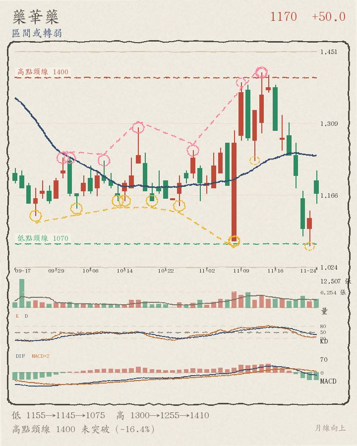
12:31 盤中 1200（-3.61%），比加權指數弱 0.42 個百分點、跌破月線 1249.25，離高點頸線 1400 還差 14.3%，轉折還沒走出明顯方向。
- 月線位置：現價 1200 在月線 1249.25 之下（-3.9%）；5 日線 1313 也在月線之上（短均在上）；月線向上
- 量能：以已過交易時間推估，今天成交量約是 20 日均量的 1.09 倍（量平），比 20 日均量大一些
- 關鍵價位：高點頸線 1400 還沒突破，差 14.3%；前一交易日高點 1310（低於 8.4%）；今天盤中高點 1270（低於 5.5%）；今天盤中低點 1180（高於 1.7%）
- 轉折結構：低點 1155、1145、1075 與高點 1300、1255、1410 都沒有明顯遞增，屬於區間震盪或轉弱；還沒確認的轉折低點 11-11 1235、11-18 1245；還沒確認的轉折高點 11-09 1390、11-12 1410（圖上虛線小圈）
旺矽 6223 上櫃
3955 -435.0（-9.91%）
區間或轉弱 盤中成交值 32.59 億・全榜第 46 名（上櫃第 7 名）・相對大盤 -6.72
好條件 0/7：無
不好條件 4/7：今日下跌、相對大盤弱、在月線之下、月線下彎

12:31 盤中 3955（-9.91%），比加權指數弱 6.72 個百分點、跌破月線 4428.25，離高點頸線 5125 還差 22.8%，轉折還沒走出明顯方向。
- 月線位置：現價 3955 在月線 4428.25 之下（-10.7%）；5 日線 4403 也在月線之下（短均在下）；月線向下
- 量能：以已過交易時間推估，今天成交量約是 20 日均量的 0.94 倍（量平），比 20 日均量少一些
- 關鍵價位：高點頸線 5125 還沒突破，差 22.8%；前一交易日高點 4390（低於 9.9%）；今天盤中高點 4360（低於 9.3%）；今天盤中低點 3955（高於 0.0%）
- 轉折結構：低點 5090、4995、3355 與高點 6160、5150、5100 都沒有明顯遞增，屬於區間震盪或轉弱；還沒確認的轉折低點 11-17 3880、11-18 3880；還沒確認的轉折高點 11-13 5100、11-18 4390（圖上虛線小圈）
量平
↑ 回上方清單
富邦金 2881 上市
146 -3.0（-2.01%）
區間或轉弱 盤中成交值 31.76 億・全榜第 47 名（上市第 40 名）・相對大盤 +1.18
好條件 0/7：無
不好條件 4/7：今日下跌、在月線之下、跌破昨日低點、月線下彎

12:31 盤中 146（-2.01%），比加權指數強 1.18 個百分點、跌破月線 156.575，離高點頸線 159.83 還差 8.7%，轉折還沒走出明顯方向。
- 月線位置：現價 146 在月線 156.575 之下（-6.8%）；5 日線 154.4 也在月線之下（短均在下）；月線向下
- 量能：以已過交易時間推估，今天成交量約是 20 日均量的 1.33 倍（量增），比 20 日均量大不少；下跌卻量增，量價背離
- 關鍵價位：高點頸線 159.83 還沒突破，差 8.7%；前一交易日高點 153（低於 4.6%）；今天盤中高點 149（低於 2.0%）；今天盤中低點 142.5（高於 2.5%）
- 轉折結構：低點 147.5、153.5、140 與高點 164、164、163.5 都沒有明顯遞增，屬於區間震盪或轉弱；還沒確認的轉折低點 11-11 150、11-17 145；還沒確認的轉折高點 11-05 159.5、11-13 163.5（圖上虛線小圈）
量增
↑ 回上方清單
健鼎 3044 上市
443.5 -38.0（-7.89%）
區間或轉弱 盤中成交值 30.43 億・全榜第 48 名（上市第 41 名）・相對大盤 -4.70
好條件 0/7：無
不好條件 4/7：今日下跌、相對大盤弱、在月線之下、月線下彎
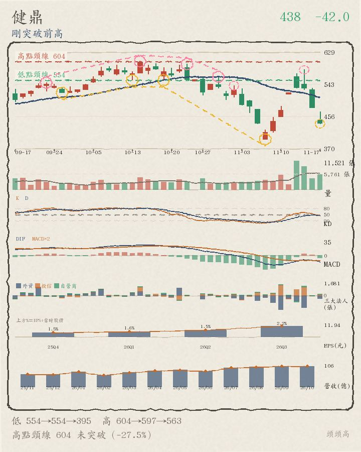
12:31 盤中 443.5（-7.89%），比加權指數弱 4.70 個百分點、跌破月線 503.2，離高點頸線 594.33 還差 25.4%，轉折還沒走出明顯方向。
- 月線位置：現價 443.5 在月線 503.2 之下（-11.9%）；5 日線 493.3 也在月線之下（短均在下）；月線向下
- 量能：以已過交易時間推估，今天成交量約是 20 日均量的 2.09 倍（爆量），比 20 日均量大不少；下跌卻量增，量價背離
- 關鍵價位：高點頸線 594.33 還沒突破，差 25.4%；前一交易日高點 481.5（低於 7.9%）；今天盤中高點 478（低於 7.2%）；今天盤中低點 435（高於 2.0%）
- 轉折結構：低點 554、554、395 與高點 597、563、582 都沒有明顯遞增，屬於區間震盪或轉弱；還沒確認的轉折低點 11-06 395、11-18 430；還沒確認的轉折高點 11-13 582、11-18 481.5（圖上虛線小圈）
台新新光金 2887 上市
35.85 -1.2（-3.37%）
區間或轉弱 盤中成交值 30.41 億・全榜第 49 名（上市第 42 名）・相對大盤 -0.18
好條件 0/7：無
不好條件 6/7：跌破前低、今日下跌、相對大盤弱、在月線之下、跌破昨日低點、月線下彎

12:31 盤中 35.85（-3.37%），比加權指數弱 0.18 個百分點、跌破月線 40.602，離高點頸線 40.46 還差 11.4%，轉折還沒走出明顯方向。
- 月線位置：現價 35.85 在月線 40.602 之下（-11.7%）；5 日線 39.09 也在月線之下（短均在下）；月線向下
- 量能：以已過交易時間推估，今天成交量約是 20 日均量的 1.78 倍（爆量），比 20 日均量大不少；下跌卻量增，量價背離
- 關鍵價位：已跌破前一個轉折低點；高點頸線 40.46 還在現價上方 11.4%；前一交易日高點 39.55（低於 9.4%）；今天盤中高點 37.15（低於 3.5%）；今天盤中低點 34.75（高於 3.2%）
- 轉折結構：低點 40.1、40.9、36.3 與高點 44.8、43.5、42.9 都沒有明顯遞增，屬於區間震盪或轉弱；還沒確認的轉折低點 11-06 36.3、11-18 36.9；還沒確認的轉折高點 11-16 41.35、11-18 39.55（圖上虛線小圈）
鴻勁 7769 上市
3210 -355.0（-9.96%）
區間或轉弱 盤中成交值 29.66 億・全榜第 50 名（上市第 43 名）・相對大盤 -6.77
好條件 0/7：無
不好條件 6/7：跌破前低、今日下跌、相對大盤弱、在月線之下、跌破昨日低點、月線下彎

12:31 盤中 3210（-9.96%），比加權指數弱 6.77 個百分點、跌破月線 4477.5，離高點頸線 6565 還差 51.1%，轉折還沒走出明顯方向。
- 月線位置：現價 3210 在月線 4477.5 之下（-28.3%）；5 日線 3791 也在月線之下（短均在下）；月線向下
- 量能：以已過交易時間推估，今天成交量約是 20 日均量的 1.38 倍（量增），比 20 日均量大不少；下跌卻量增，量價背離
- 關鍵價位：已跌破前一個轉折低點；高點頸線 6565 還在現價上方 51.1%；前一交易日高點 3670（低於 12.5%）；今天盤中高點 3595（低於 10.7%）；今天盤中低點 3210（高於 0.0%）
- 轉折結構：低點 5380、5035、3585 與高點 6515、5610、4405 都沒有明顯遞增，屬於區間震盪或轉弱；還沒確認的轉折低點 11-06 3585、11-18 3330；還沒確認的轉折高點 11-12 4405、11-18 3670（圖上虛線小圈）
兆豐金 2886 上市
54.1 +1.5（+2.85%）
上升趨勢（底底高＋頭頭高） 盤中成交值 29.39 億・全榜第 51 名（上市第 44 名）・相對大盤 +6.04
好條件 4/7：月線向上、底底高、頭頭高、攻擊量（量增＋上漲）
不好條件 1/7：在月線之下

12:31 盤中 54.1（+2.85%），比加權指數強 6.04 個百分點、跌破月線 54.12，離高點頸線 56.1 還差 3.6%，轉折結構仍是底底高＋頭頭高。
- 月線位置：現價 54.1 在月線 54.12 之下（-0.0%）；5 日線 54.32 也在月線之上（短均在上）；月線向上
- 量能：以已過交易時間推估，今天成交量約是 20 日均量的 2.82 倍（爆量），比 20 日均量大不少；上漲又量增，量價配合
- 關鍵價位：高點頸線 56.1 還沒突破，差 3.6%；前一交易日高點 54.8（低於 1.3%）；今天盤中高點 56.5（低於 4.2%）；今天盤中低點 52.3（高於 3.4%）
- 轉折結構：低點 48.35、49、50.4 一路墊高、高點 54.4、56、56 也一路墊高，是底底高＋頭頭高；還沒確認的轉折低點 11-11 52.2、11-18 52；還沒確認的轉折高點 11-10 54.2、11-16 56.3（圖上虛線小圈）
智原 3035 上市
178 -8.0（-4.30%）
區間或轉弱 盤中成交值 29.12 億・全榜第 52 名（上市第 45 名）・相對大盤 -1.11
好條件 0/7：無
不好條件 4/7：今日下跌、相對大盤弱、在月線之下、月線下彎
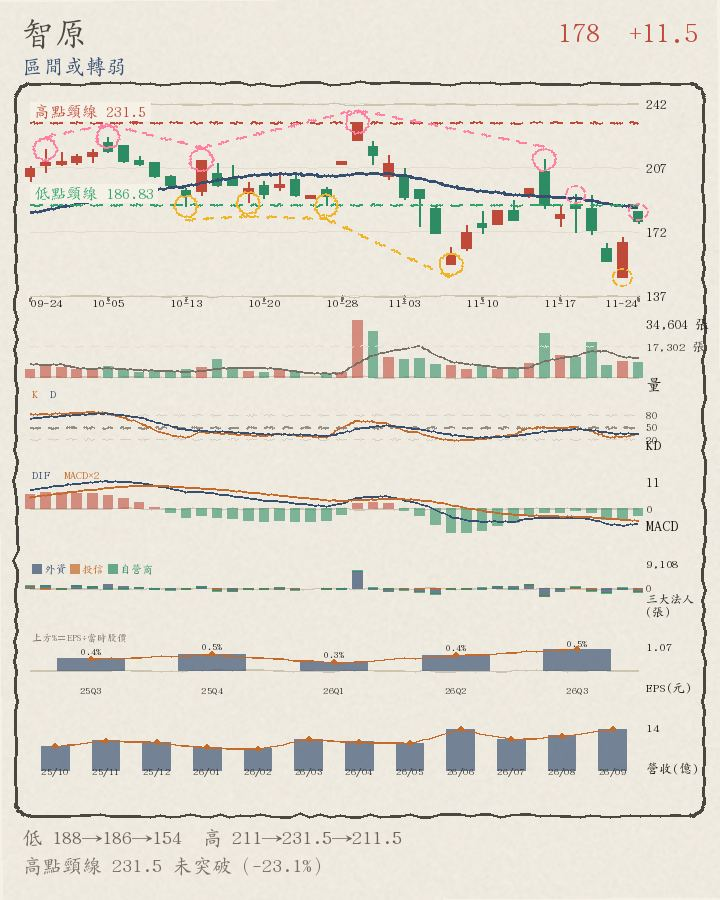
12:31 盤中 178（-4.30%），比加權指數弱 1.11 個百分點、跌破月線 190.55，離高點頸線 217.33 還差 18.1%，轉折還沒走出明顯方向。
- 月線位置：現價 178 在月線 190.55 之下（-6.6%）；5 日線 185.7 也在月線之下（短均在下）；月線向下
- 量能：以已過交易時間推估，今天成交量約是 20 日均量的 2.06 倍（爆量），比 20 日均量大不少；下跌卻量增，量價背離
- 關鍵價位：高點頸線 217.33 還沒突破，差 18.1%；前一交易日高點 192.5（低於 7.5%）；今天盤中高點 192（低於 7.3%）；今天盤中低點 174（高於 2.3%）
- 轉折結構：低點 188、186.5、154.5 與高點 223.5、211、231.5 都沒有明顯遞增，屬於區間震盪或轉弱；還沒確認的轉折低點 11-06 154.5、11-18 172；還沒確認的轉折高點 11-16 211.5、11-18 192.5（圖上虛線小圈）
永豐金 2890 上市
39.7 -0.7（-1.73%）
高點墊高、底部不穩 盤中成交值 28.81 億・全榜第 53 名（上市第 46 名）・相對大盤 +1.46
好條件 1/7：頭頭高
不好條件 5/7：今日下跌、在月線之下、貼近今日低點（1% 內）、跌破昨日低點、月線下彎

12:31 盤中 39.7（-1.73%），比加權指數強 1.46 個百分點、跌破月線 44.02，離高點頸線 43.77 還差 9.3%，高點還在墊高（但底部沒同步墊高）。
- 月線位置：現價 39.7 在月線 44.02 之下（-9.8%）；5 日線 42.37 也在月線之下（短均在下）；月線向下
- 量能：以已過交易時間推估，今天成交量約是 20 日均量的 3.46 倍（爆量），比 20 日均量大不少；下跌卻量增，量價背離
- 關鍵價位：高點頸線 43.77 還沒突破，差 9.3%；前一交易日高點 42（低於 5.5%）；今天盤中高點 41.4（低於 4.1%）；今天盤中低點 39.5（高於 0.5%）
- 轉折結構：高點 45.5、46.15、47.5 墊高（頭頭高），但低點 42.7248、43.8、38.9 沒有同步墊高；還沒確認的轉折低點 11-11 41.1、11-18 39.7；還沒確認的轉折高點 11-09 43.1、11-16 44.45（圖上虛線小圈）
禾伸堂 3026 上市
360 -39.5（-9.89%）
區間或轉弱 盤中成交值 28.69 億・全榜第 54 名（上市第 47 名）・相對大盤 -6.70
好條件 0/7：無
不好條件 6/7：跌破前低、今日下跌、相對大盤弱、在月線之下、跌破昨日低點、月線下彎

12:31 盤中 360（-9.89%），比加權指數弱 6.70 個百分點、跌破月線 596.05，離高點頸線 847 還差 57.5%，轉折還沒走出明顯方向。
- 月線位置：現價 360 在月線 596.05 之下（-39.6%）；5 日線 458.5 也在月線之下（短均在下）；月線向下
- 量能：以已過交易時間推估，今天成交量約是 20 日均量的 0.89 倍（量平），比 20 日均量少一些
- 關鍵價位：已跌破前一個轉折低點；高點頸線 847 還在現價上方 57.5%；前一交易日高點 428（低於 15.9%）；今天盤中高點 403（低於 10.7%）；今天盤中低點 360（高於 0.0%）
- 轉折結構：低點 726、704、475.5 與高點 888、859、571 都沒有明顯遞增，屬於區間震盪或轉弱；還沒確認的轉折低點 11-06 475.5、11-18 373.5；還沒確認的轉折高點 11-12 571（圖上虛線小圈）
光寶科 2301 上市
197.5 -10.5（-5.05%）
區間或轉弱 盤中成交值 28.67 億・全榜第 55 名（上市第 48 名）・相對大盤 -1.86
好條件 0/7：無
不好條件 4/7：今日下跌、相對大盤弱、在月線之下、月線下彎

12:31 盤中 197.5（-5.05%），比加權指數弱 1.86 個百分點、跌破月線 233.275，離高點頸線 241.25 還差 18.1%，轉折還沒走出明顯方向。
- 月線位置：現價 197.5 在月線 233.275 之下（-15.3%）；5 日線 217.5 也在月線之下（短均在下）；月線向下
- 量能：以已過交易時間推估，今天成交量約是 20 日均量的 1.18 倍（量增），比 20 日均量大不少；下跌卻量增，量價背離
- 關鍵價位：高點頸線 241.25 還沒突破，差 18.1%；前一交易日高點 215（低於 8.1%）；今天盤中高點 214（低於 7.7%）；今天盤中低點 192.5（高於 2.6%）
- 轉折結構：低點 278、254、190.5 與高點 299.5、304.5、243.5 都沒有明顯遞增，屬於區間震盪或轉弱；還沒確認的轉折低點 11-12 227.5、11-18 197；還沒確認的轉折高點 11-12 243.5、11-18 215（圖上虛線小圈）
量增
↑ 回上方清單
金居 8358 上櫃
274 -30.0（-9.87%）
區間或轉弱 盤中成交值 27.68 億・全榜第 56 名（上櫃第 8 名）・相對大盤 -6.68
好條件 0/7：無
不好條件 6/7：跌破前低、今日下跌、相對大盤弱、在月線之下、跌破昨日低點、月線下彎

12:31 盤中 274（-9.87%），比加權指數弱 6.68 個百分點、跌破月線 383.75，離高點頸線 420.5 還差 34.8%，轉折還沒走出明顯方向。
- 月線位置：現價 274 在月線 383.75 之下（-28.6%）；5 日線 341.5 也在月線之下（短均在下）；月線向下
- 量能：以已過交易時間推估，今天成交量約是 20 日均量的 1.03 倍（量平），跟 20 日均量差不多
- 關鍵價位：已跌破前一個轉折低點；高點頸線 420.5 還在現價上方 34.8%；前一交易日高點 334（低於 18.0%）；今天盤中高點 305（低於 10.2%）；今天盤中低點 274（高於 0.0%）
- 轉折結構：低點 477、399.5、301 與高點 578、510、413 都沒有明顯遞增，屬於區間震盪或轉弱；還沒確認的轉折低點 11-06 301、11-18 288；還沒確認的轉折高點 11-03 428、11-12 413（圖上虛線小圈）
緯創 3231 上市
159 -3.0（-1.85%）
區間或轉弱 盤中成交值 26.8 億・全榜第 57 名（上市第 49 名）・相對大盤 +1.34
好條件 0/7：無
不好條件 3/7：今日下跌、在月線之下、月線下彎

12:31 盤中 159（-1.85%），比加權指數強 1.34 個百分點、跌破月線 176.375，離高點頸線 177.75 還差 10.5%，轉折還沒走出明顯方向。
- 月線位置：現價 159 在月線 176.375 之下（-9.8%）；5 日線 163.8 也在月線之下（短均在下）；月線向下
- 量能：以已過交易時間推估，今天成交量約是 20 日均量的 0.59 倍（量縮），比 20 日均量少很多
- 關鍵價位：高點頸線 177.75 還沒突破，差 10.5%；前一交易日高點 163.5（低於 2.8%）；今天盤中高點 164（低於 3.0%）；今天盤中低點 156（高於 1.9%）
- 轉折結構：低點 182.5、173.5、152 與高點 194.5、199.5、181 都沒有明顯遞增，屬於區間震盪或轉弱；還沒確認的轉折低點 11-06 152、11-17 153；還沒確認的轉折高點 11-12 181、11-18 163.5（圖上虛線小圈）
量縮
↑ 回上方清單
元大金 2885 上市
63.4 -1.5（-2.31%）
區間或轉弱 盤中成交值 26.54 億・全榜第 58 名（上市第 50 名）・相對大盤 +0.88
好條件 0/7：無
不好條件 4/7：今日下跌、在月線之下、跌破昨日低點、月線下彎
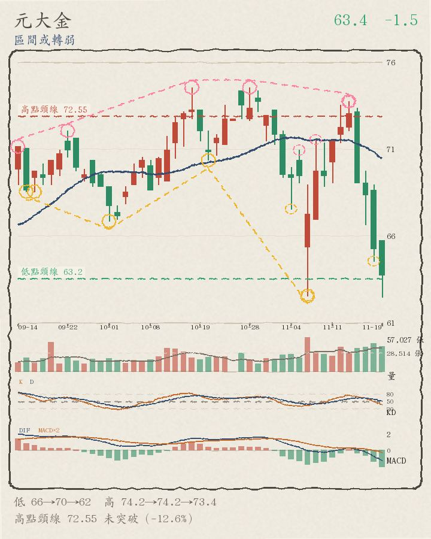
12:31 盤中 63.4（-2.31%），比加權指數強 0.88 個百分點、跌破月線 70.495，離高點頸線 72.55 還差 12.6%，轉折還沒走出明顯方向。
- 月線位置：現價 63.4 在月線 70.495 之下（-10.1%）；5 日線 69.24 也在月線之下（短均在下）；月線向下
- 量能：以已過交易時間推估，今天成交量約是 20 日均量的 1.86 倍（爆量），比 20 日均量大不少；下跌卻量增，量價背離
- 關鍵價位：高點頸線 72.55 還沒突破，差 12.6%；前一交易日高點 68.6（低於 7.6%）；今天盤中高點 65.4（低於 3.1%）；今天盤中低點 62.1（高於 2.1%）
- 轉折結構：低點 66.5、70、62.2 與高點 74.2、74.2、73.4 都沒有明顯遞增，屬於區間震盪或轉弱；還沒確認的轉折低點 11-06 62.2、11-18 64.2；還沒確認的轉折高點 11-09 71.2、11-13 73.4（圖上虛線小圈）
雙鴻 3324 上櫃
882 -97.0（-9.91%）
區間或轉弱 盤中成交值 25.08 億・全榜第 59 名（上櫃第 9 名）・相對大盤 -6.72
好條件 0/7：無
不好條件 6/7：跌破前低、今日下跌、相對大盤弱、在月線之下、跌破昨日低點、月線下彎

12:31 盤中 882（-9.91%），比加權指數弱 6.72 個百分點、跌破月線 1241.55，離高點頸線 1515 還差 41.8%，轉折還沒走出明顯方向。
- 月線位置：現價 882 在月線 1241.55 之下（-29.0%）；5 日線 1049.2 也在月線之下（短均在下）；月線向下
- 量能：以已過交易時間推估，今天成交量約是 20 日均量的 0.76 倍（量平），比 20 日均量少很多
- 關鍵價位：已跌破前一個轉折低點；高點頸線 1515 還在現價上方 41.8%；前一交易日高點 1015（低於 13.1%）；今天盤中高點 957（低於 7.8%）；今天盤中低點 882（高於 0.0%）
- 轉折結構：低點 1320、1310、1050 與高點 1515、1515、1315 都沒有明顯遞增，屬於區間震盪或轉弱；還沒確認的轉折低點 11-09 1050、11-18 896；還沒確認的轉折高點 11-11 1315、11-18 1015（圖上虛線小圈）
信驊 5274 上櫃
8730 -970.0（-10.00%）
區間或轉弱 盤中成交值 23.13 億・全榜第 60 名（上櫃第 10 名）・相對大盤 -6.81
好條件 0/7：無
不好條件 6/7：跌破前低、今日下跌、相對大盤弱、在月線之下、跌破昨日低點、月線下彎

12:31 盤中 8730（-10.00%），比加權指數弱 6.81 個百分點、跌破月線 13685.8，轉折還沒走出明顯方向。
- 月線位置：現價 8730 在月線 13685.8 之下（-36.2%）；5 日線 10866 也在月線之下（短均在下）；月線向下
- 量能：以已過交易時間推估，今天成交量約是 20 日均量的 0.78 倍（量平），比 20 日均量少很多
- 關鍵價位：前一交易日高點 9900（低於 11.8%）；今天盤中高點 9490（低於 8.0%）；今天盤中低點 8730（高於 0.0%）
- 轉折結構：低點 15975、15500、10710 與高點 18465、17490、13375 都沒有明顯遞增，屬於區間震盪或轉弱；還沒確認的轉折低點 11-10 10710、11-18 8915；還沒確認的轉折高點 11-09 11990、11-12 13375（圖上虛線小圈）
聯亞 3081 上櫃
1515 -165.0（-9.82%）
區間或轉弱 盤中成交值 22.48 億・全榜第 61 名（上櫃第 11 名）・相對大盤 -6.63
好條件 0/7：無
不好條件 6/7：跌破前低、今日下跌、相對大盤弱、在月線之下、跌破昨日低點、月線下彎

12:31 盤中 1515（-9.82%），比加權指數弱 6.63 個百分點、跌破月線 2174.25，離高點頸線 2940 還差 48.5%，轉折還沒走出明顯方向。
- 月線位置：現價 1515 在月線 2174.25 之下（-30.3%）；5 日線 1900 也在月線之下（短均在下）；月線向下
- 量能：以已過交易時間推估，今天成交量約是 20 日均量的 0.58 倍（量縮），比 20 日均量少很多
- 關鍵價位：已跌破前一個轉折低點；高點頸線 2940 還在現價上方 48.5%；前一交易日高點 1790（低於 15.4%）；今天盤中高點 1685（低於 10.1%）；今天盤中低點 1515（高於 0.0%）
- 轉折結構：低點 2585、2365、1705 與高點 3210、2795、2320 都沒有明顯遞增，屬於區間震盪或轉弱；還沒確認的轉折低點 11-06 1705、11-18 1550；還沒確認的轉折高點 11-12 2320（圖上虛線小圈）
鈊象 3293 上櫃
796 -3.0（-0.38%）
區間或轉弱 盤中成交值 19.36 億・全榜第 62 名（上櫃第 12 名）・相對大盤 +2.81
好條件 1/7：站上月線
不好條件 3/7：今日下跌、貼近今日低點（1% 內）、月線下彎

12:31 盤中 796（-0.38%），比加權指數強 2.81 個百分點、站上月線 781.7，離高點頸線 812 還差 2.0%，轉折還沒走出明顯方向。
- 月線位置：現價 796 在月線 781.7 之上（+1.8%）；5 日線 784.6 也在月線之上（短均在上）；月線向下
- 量能：以已過交易時間推估，今天成交量約是 20 日均量的 2.41 倍（爆量），比 20 日均量大不少；下跌卻量增，量價背離
- 關鍵價位：高點頸線 812 還沒突破，差 2.0%；前一交易日高點 807（低於 1.4%）；今天盤中高點 816（低於 2.5%）；今天盤中低點 789（高於 0.9%）
- 轉折結構：低點 771、766、698 與高點 819、817、812 都沒有明顯遞增，屬於區間震盪或轉弱；還沒確認的轉折低點 11-12 757、11-17 773；還沒確認的轉折高點 11-13 805、11-18 807（圖上虛線小圈）
力旺 3529 上櫃
2020 -195.0（-8.80%）
區間或轉弱 盤中成交值 18.3 億・全榜第 63 名（上櫃第 13 名）・相對大盤 -5.61
好條件 0/7：無
不好條件 5/7：今日下跌、相對大盤弱、在月線之下、跌破昨日低點、月線下彎

12:31 盤中 2020（-8.80%），比加權指數弱 5.61 個百分點、跌破月線 2298.5，離高點頸線 2315 還差 12.7%，轉折還沒走出明顯方向。
- 月線位置：現價 2020 在月線 2298.5 之下（-12.1%）；5 日線 2218 也在月線之下（短均在下）；月線向下
- 量能：以已過交易時間推估，今天成交量約是 20 日均量的 1.15 倍（量增），比 20 日均量大不少；下跌卻量增，量價背離
- 關鍵價位：高點頸線 2315 還沒突破，差 12.7%；前一交易日高點 2315（低於 12.7%）；今天盤中高點 2230（低於 9.4%）；今天盤中低點 1995（高於 1.3%）
- 轉折結構：低點 2530、2470、1825 與高點 3635、2675、2425 都沒有明顯遞增，屬於區間震盪或轉弱；還沒確認的轉折低點 11-06 1825、11-18 2070；還沒確認的轉折高點 11-17 2315、11-18 2315（圖上虛線小圈）
量增
↑ 回上方清單
驊宏資 6148 上櫃
49.8 -2.1（-4.05%）
高點墊高、底部不穩 盤中成交值 17.63 億・全榜第 64 名（上櫃第 14 名）・相對大盤 -0.86
好條件 4/7：站上月線、月線向上、頭頭高、突破頸線
不好條件 4/7：今日下跌、相對大盤弱、貼近今日低點（1% 內）、跌破昨日低點

12:31 盤中 49.8（-4.05%），比加權指數弱 0.86 個百分點、站上月線 46.605，已突破高點頸線 46.65，高點還在墊高（但底部沒同步墊高）。
- 月線位置：現價 49.8 在月線 46.605 之上（+6.9%）；5 日線 56.88 也在月線之上（短均在上）；月線向上
- 量能：以已過交易時間推估，今天成交量約是 20 日均量的 2.43 倍（爆量），比 20 日均量大不少；下跌卻量增，量價背離
- 關鍵價位：高點頸線 46.65 已站上；前一交易日高點 58.4（低於 14.7%）；今天盤中高點 54.9（低於 9.3%）；今天盤中低點 49.55（高於 0.5%）
- 轉折結構：高點 42.1、44.3、46.45 墊高（頭頭高），但低點 36.3、36.35、37.85 沒有同步墊高；還沒確認的轉折低點 11-06 39.1、11-18 51.9；還沒確認的轉折高點 11-05 46.85、11-17 66.4（圖上虛線小圈）
宜鼎 5289 上櫃
789 -47.0（-5.62%）
區間或轉弱 盤中成交值 17.52 億・全榜第 65 名（上櫃第 15 名）・相對大盤 -2.43
好條件 0/7：無
不好條件 5/7：跌破前低、今日下跌、相對大盤弱、在月線之下、月線下彎

12:31 盤中 789（-5.62%），比加權指數弱 2.43 個百分點、跌破月線 1007，離高點頸線 1017.5 還差 22.5%，轉折還沒走出明顯方向。
- 月線位置：現價 789 在月線 1007 之下（-21.6%）；5 日線 890.4 也在月線之下（短均在下）；月線向下
- 量能：以已過交易時間推估，今天成交量約是 20 日均量的 1.54 倍（爆量），比 20 日均量大不少；下跌卻量增，量價背離
- 關鍵價位：已跌破前一個轉折低點；高點頸線 1017.5 還在現價上方 22.5%；前一交易日高點 879（低於 10.2%）；今天盤中高點 836（低於 5.6%）；今天盤中低點 762（高於 3.5%）
- 轉折結構：低點 1065、1065、851 與高點 1375、1205、1025 都沒有明顯遞增，屬於區間震盪或轉弱；還沒確認的轉折低點 11-06 851、11-17 780；還沒確認的轉折高點 11-12 1025、11-18 879（圖上虛線小圈）
威剛 3260 上櫃
256.5 -18.5（-6.73%）
區間或轉弱 盤中成交值 17.29 億・全榜第 66 名（上櫃第 16 名）・相對大盤 -3.54
好條件 0/7：無
不好條件 6/7：跌破前低、今日下跌、相對大盤弱、在月線之下、跌破昨日低點、月線下彎

12:31 盤中 256.5（-6.73%），比加權指數弱 3.54 個百分點、跌破月線 315.175，離高點頸線 319.75 還差 19.8%，轉折還沒走出明顯方向。
- 月線位置：現價 256.5 在月線 315.175 之下（-18.6%）；5 日線 284.7 也在月線之下（短均在下）；月線向下
- 量能：以已過交易時間推估，今天成交量約是 20 日均量的 1.25 倍（量增），比 20 日均量大不少；下跌卻量增，量價背離
- 關鍵價位：已跌破前一個轉折低點；高點頸線 319.75 還在現價上方 19.8%；前一交易日高點 288（低於 10.9%）；今天盤中高點 275（低於 6.7%）；今天盤中低點 252.5（高於 1.6%）
- 轉折結構：低點 328、328、270 與高點 385.5、378.5、323 都沒有明顯遞增，屬於區間震盪或轉弱；還沒確認的轉折低點 11-12 292.5、11-17 263；還沒確認的轉折高點 11-12 316.5、11-18 288（圖上虛線小圈）
合晶 6182 上櫃
63.4 -6.7（-9.56%）
區間或轉弱 盤中成交值 17.24 億・全榜第 67 名（上櫃第 17 名）・相對大盤 -6.37
好條件 0/7：無
不好條件 7/7：跌破前低、今日下跌、相對大盤弱、在月線之下、貼近今日低點（1% 內）、跌破昨日低點、月線下彎
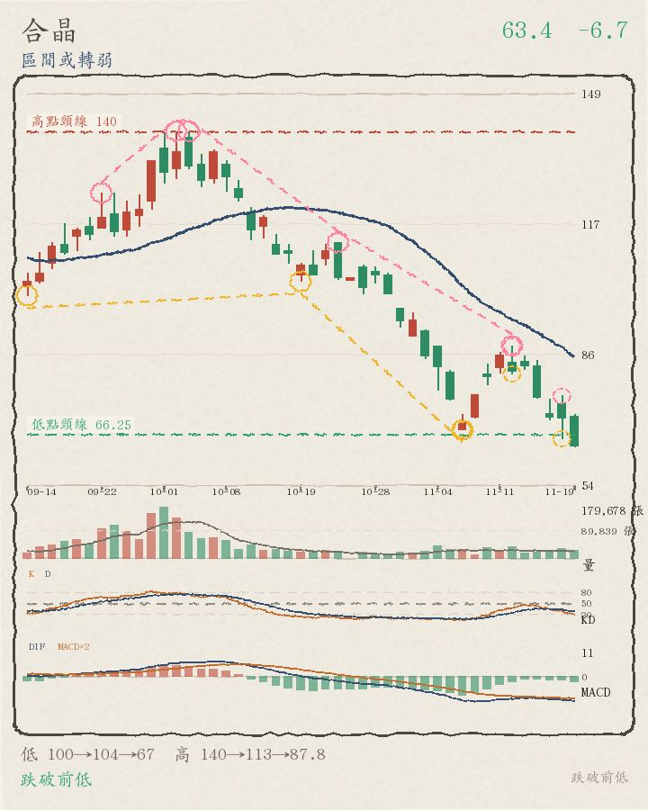
12:31 盤中 63.4（-9.56%），比加權指數弱 6.37 個百分點、跌破月線 87.49，離高點頸線 140 還差 54.7%，轉折還沒走出明顯方向。
- 月線位置：現價 63.4 在月線 87.49 之下（-27.5%）；5 日線 76.08 也在月線之下（短均在下）；月線向下
- 量能：以已過交易時間推估，今天成交量約是 20 日均量的 1.44 倍（量增），比 20 日均量大不少；下跌卻量增，量價背離
- 關鍵價位：已跌破前一個轉折低點；高點頸線 140 還在現價上方 54.7%；前一交易日高點 75.6（低於 16.1%）；今天盤中高點 71（低於 10.7%）；今天盤中低點 63.1（高於 0.5%）
- 轉折結構：低點 100、103.5、67.3 與高點 140、113、87.8 都沒有明顯遞增，屬於區間震盪或轉弱；還沒確認的轉折低點 11-12 81、11-18 65.2；還沒確認的轉折高點 11-12 87.8、11-18 75.6（圖上虛線小圈）
欣銓 3264 上櫃
151 -16.5（-9.85%）
區間或轉弱 盤中成交值 14.93 億・全榜第 68 名（上櫃第 18 名）・相對大盤 -6.66
好條件 0/7：無
不好條件 6/7：跌破前低、今日下跌、相對大盤弱、在月線之下、跌破昨日低點、月線下彎
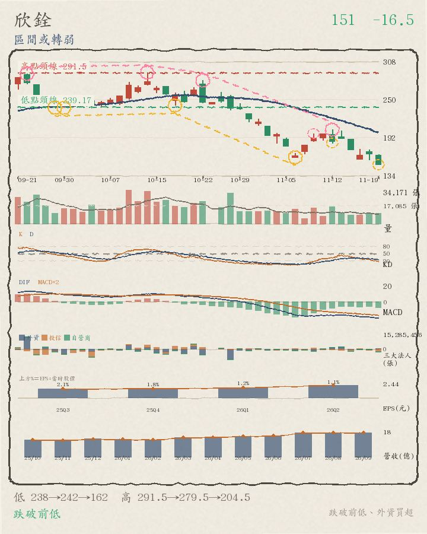
12:31 盤中 151（-9.85%），比加權指數弱 6.66 個百分點、跌破月線 205.5，離高點頸線 201.5 還差 25.1%，轉折還沒走出明顯方向。
- 月線位置：現價 151 在月線 205.5 之下（-26.5%）；5 日線 177.2 也在月線之下（短均在下）；月線向下
- 量能：以已過交易時間推估，今天成交量約是 20 日均量的 0.90 倍（量平），比 20 日均量少一些
- 關鍵價位：已跌破前一個轉折低點；高點頸線 201.5 還在現價上方 25.1%；前一交易日高點 173.5（低於 13.0%）；今天盤中高點 166（低於 9.0%）；今天盤中低點 151（高於 0.0%）
- 轉折結構：低點 238、241.5、162 與高點 291.5、279.5、204.5 都沒有明顯遞增，屬於區間震盪或轉弱；還沒確認的轉折低點 11-12 184、11-18 158；還沒確認的轉折高點 11-10 198.5、11-12 204.5（圖上虛線小圈）
萬潤 6187 上櫃
705 -66.0（-8.56%）
區間或轉弱 盤中成交值 14.32 億・全榜第 69 名（上櫃第 19 名）・相對大盤 -5.37
好條件 0/7：無
不好條件 6/7：跌破前低、今日下跌、相對大盤弱、在月線之下、跌破昨日低點、月線下彎

12:31 盤中 705（-8.56%），比加權指數弱 5.37 個百分點、跌破月線 1069.4，離高點頸線 1445 還差 51.2%，轉折還沒走出明顯方向。
- 月線位置：現價 705 在月線 1069.4 之下（-34.1%）；5 日線 861 也在月線之下（短均在下）；月線向下
- 量能：以已過交易時間推估，今天成交量約是 20 日均量的 1.24 倍（量增），比 20 日均量大不少；下跌卻量增，量價背離
- 關鍵價位：已跌破前一個轉折低點；高點頸線 1445 還在現價上方 51.2%；前一交易日高點 800（低於 11.9%）；今天盤中高點 769（低於 8.3%）；今天盤中低點 694（高於 1.6%）
- 轉折結構：低點 1180、1180、864 與高點 1680、1360、1060 都沒有明顯遞增，屬於區間震盪或轉弱；還沒確認的轉折低點 11-06 864、11-18 707；還沒確認的轉折高點 11-12 1060（圖上虛線小圈）
昇達科 3491 上櫃
1380 -130.0（-8.61%）
高點墊高、底部不穩 盤中成交值 13.47 億・全榜第 70 名（上櫃第 20 名）・相對大盤 -5.42
好條件 3/7：站上月線、月線向上、頭頭高
不好條件 2/7：今日下跌、相對大盤弱

12:31 盤中 1380（-8.61%），比加權指數弱 5.42 個百分點、站上月線 1322.75，離高點頸線 1596.67 還差 13.6%，高點還在墊高（但底部沒同步墊高）。
- 月線位置：現價 1380 在月線 1322.75 之上（+4.3%）；5 日線 1449 也在月線之上（短均在上）；月線向上
- 量能：以已過交易時間推估，今天成交量約是 20 日均量的 0.69 倍（量縮），比 20 日均量少很多
- 關鍵價位：高點頸線 1596.67 還沒突破，差 13.6%；前一交易日高點 1585（低於 12.9%）；今天盤中高點 1490（低於 7.4%）；今天盤中低點 1360（高於 1.5%）
- 轉折結構：高點 1760、1470、1575 墊高（頭頭高），但低點 1450、1315、1065 沒有同步墊高；還沒確認的轉折低點 11-06 1065、11-17 1315；還沒確認的轉折高點 11-12 1575、11-18 1585（圖上虛線小圈）